<title>Скалы и вулканы — White Irbis</title>
<meta name="claude:viewport-fit-sides" content="cover">
<link rel="icon" href="favicon.ico" sizes="any">
<link rel="icon" type="image/png" sizes="32x32" href="img/favicon-32.png">
<link rel="apple-touch-icon" href="img/apple-touch-icon.png">
<link rel="manifest" href="manifest.webmanifest">
<meta name="apple-mobile-web-app-title" content="Скалы+Вулкан">
<meta name="theme-color" content="#121212">
<meta name="description" content="7 дней в Армении: скалолазание в Нораванке и Адском ущелье и восхождение на Арагац. Для новичков, группа до 8 человек, 99 000 ₽.">
<meta property="og:type" content="website">
<meta property="og:site_name" content="White Irbis">
<meta property="og:title" content="Скалы и вулканы — 7 дней в Армении">
<meta property="og:description" content="Скалолазание в Нораванке и Адском ущелье и восхождение на Арагац. Для новичков — научим с нуля. 99 000 ₽, апрель — ноябрь.">
<meta property="og:url" content="https://scmam-rgb.github.io/white-irbis/skaly-i-vulkan/">
<meta property="og:image" content="https://scmam-rgb.github.io/white-irbis/skaly-i-vulkan/img/preview-v2.jpg">
<meta property="og:image:width" content="1200">
<meta property="og:image:height" content="630">
<meta name="twitter:card" content="summary_large_image">
<link rel="preconnect" href="https://fonts.googleapis.com">
<link rel="preconnect" href="https://fonts.gstatic.com" crossorigin>
<link rel="stylesheet" href="https://fonts.googleapis.com/css2?family=Oswald:wght@300;400;500;600;700&family=Rubik:wght@400;500;600&family=Noto+Sans+Armenian:wdth,wght@62.5..100,400..700&display=swap">
<style>
/* Layout: photo-led editorial page; dark hero band, then cream/ink sections; yellow = snow-leopard eye, used only for markers and the main action */
:root{
  --ink:#121212; --paper:#F7F4EC; --card:#EEEADF; --line:#DDD6C3; --muted:#6B6A62;
  --eye:#FAEB0F; --eye-ink:#121212; --deep:#121212; --on-deep:#F7F4EC; --on-deep-muted:#B9B5A8;
  --display:'Oswald', 'Arial Narrow', Arial, sans-serif;
  --body:'Rubik', 'Segoe UI', Arial, sans-serif;
  --wrap:1180px;
}
@media (prefers-color-scheme: dark){:root:not([data-theme="light"]){
  --ink:#EFEBE0; --paper:#161614; --card:#201F1C; --line:#34322D; --muted:#A39F92;
  --deep:#0B0B0A; --on-deep:#F7F4EC; --on-deep-muted:#A9A597; color-scheme:dark}}
:root[data-theme="dark"]{
  --ink:#EFEBE0; --paper:#161614; --card:#201F1C; --line:#34322D; --muted:#A39F92;
  --deep:#0B0B0A; --on-deep:#F7F4EC; --on-deep-muted:#A9A597; color-scheme:dark}

*{box-sizing:border-box}
body{background:var(--paper);color:var(--ink);font-family:var(--body);font-size:17px;line-height:1.55;-webkit-font-smoothing:antialiased}
img{max-width:100%;display:block}
a{color:inherit}
h1,h2,h3{font-family:var(--display);font-weight:600;line-height:1.05;text-wrap:balance;margin:0}
p{margin:0}
.wrap{max-width:var(--wrap);margin:0 auto;padding-left:max(20px, env(safe-area-inset-left, 0px));padding-right:max(20px, env(safe-area-inset-right, 0px))}
section{padding-block:88px}
.eyebrow{font-family:var(--body);font-size:13px;font-weight:600;letter-spacing:.16em;text-transform:uppercase;color:var(--muted)}
.mark{display:inline-block;background:var(--eye);color:var(--eye-ink);font-weight:600;padding:2px 10px;border-radius:3px;font-size:13px;letter-spacing:.08em;text-transform:uppercase}
.h2{font-size:clamp(34px,5vw,56px);text-transform:uppercase;margin-top:12px}
.lead{font-size:19px;max-width:62ch;color:var(--muted);margin-top:16px}
.credit{font-size:12px;color:var(--muted);margin-top:8px;line-height:1.4}
figure{margin:0}
:focus-visible{outline:3px solid var(--eye);outline-offset:3px}

/* top bar */
.top{position:absolute;inset:0 0 auto;z-index:3;padding-top:env(safe-area-inset-top,0px)}
.top .wrap{display:flex;align-items:center;justify-content:space-between;gap:16px;padding-block:18px}
.brand{display:flex;align-items:center;gap:12px;text-decoration:none;color:var(--on-deep)}
.brand img{width:124px;height:124px}
@media (max-width:640px){.brand img{width:84px;height:84px}}
.brand span{font-family:var(--display);font-size:20px;letter-spacing:.06em;text-transform:uppercase}
.top nav{display:flex;gap:22px;font-size:15px}
.top nav a{color:var(--on-deep);text-decoration:none;opacity:.85}
.top nav a:hover{opacity:1;text-decoration:underline;text-underline-offset:4px}

/* hero */
.hero{position:relative;background:var(--deep);color:var(--on-deep);padding-block:0;overflow:hidden}
.hero-photos{position:absolute;top:0;bottom:0;right:0;left:42%;display:block}
.hero-photos img{width:100%;height:100%;object-fit:cover;object-position:35% 40%}
.hero-photos::after{content:"";position:absolute;inset:0;background:linear-gradient(180deg,rgba(10,10,9,.45) 0%,rgba(10,10,9,0) 30%);box-shadow:inset 10px 0 0 var(--eye)}
.hero .wrap{position:relative;z-index:2;padding-block:190px 64px;min-height:640px;display:flex;flex-direction:column;justify-content:flex-end;gap:22px}
.hero h1{font-size:clamp(56px,11vw,140px);font-weight:700;text-transform:uppercase;letter-spacing:.01em}
.hero h1 em{font-style:normal;color:var(--eye)}
.hero .sub{font-size:clamp(18px,2.2vw,23px);max-width:40ch;color:var(--on-deep)}
.alt{font-family:var(--display);font-size:15px;letter-spacing:.12em;color:var(--eye);text-transform:uppercase}
.cta{display:inline-flex;align-items:center;gap:10px;background:var(--eye);color:var(--eye-ink);font-family:var(--display);font-size:20px;text-transform:uppercase;letter-spacing:.06em;padding:14px 26px;border-radius:4px;text-decoration:none;font-weight:600}
.cta:hover{filter:brightness(.95)}
.hero-row{display:flex;flex-wrap:wrap;gap:16px 28px;align-items:center}
.price-chip{font-family:var(--display);font-size:28px}
.price-chip small{font-family:var(--body);font-size:14px;color:var(--on-deep-muted);margin-left:6px}

/* facts strip */
.facts{background:var(--deep);color:var(--on-deep);padding-block:0}
.facts dl{display:grid;grid-template-columns:repeat(5,1fr);margin:0;border-top:1px solid #2E2D29}
.facts div{padding:22px 18px 26px;border-right:1px solid #2E2D29;min-width:0}
.facts div:last-child{border-right:0}
.facts dt{font-size:12px;letter-spacing:.14em;text-transform:uppercase;color:var(--on-deep-muted)}
.facts dd{margin:6px 0 0;font-family:var(--display);font-size:24px;line-height:1.15}
.facts dd small{display:block;font-family:var(--body);font-size:13px;color:var(--on-deep-muted);margin-top:4px}

/* who */
.who-grid{display:grid;grid-template-columns:repeat(3,1fr);gap:20px;margin-top:40px}
.who{background:var(--card);border-radius:6px;padding:28px;display:flex;flex-direction:column;gap:10px;min-width:0}
.who h3{font-size:28px;text-transform:uppercase}
.who.dark{background:var(--deep);color:var(--on-deep)}
.who.dark h3{color:var(--eye)}
.who.dark p{color:var(--on-deep-muted)}
.who p{color:var(--muted)}
.note{margin-top:24px;color:var(--muted)}

/* route */
.route{display:grid;grid-template-columns:1fr 1.1fr;gap:48px;align-items:center;margin-top:40px}
.legs{display:flex;flex-direction:column;gap:22px;list-style:none;padding:0;margin:0}
.legs li{display:grid;grid-template-columns:110px 1fr;gap:16px;align-items:baseline;border-top:1px solid var(--line);padding-top:18px}
.legs b{font-family:var(--display);font-size:20px;font-weight:600;text-transform:uppercase}
.legs span{color:var(--muted)}
.route figure img{border-radius:6px;background:#F7F4EC}

/* program */
.prog{background:var(--card)}
.days{list-style:none;padding:0;margin:44px 0 0;display:flex;flex-direction:column;gap:28px}
.day{display:grid;grid-template-columns:minmax(0,1fr) minmax(0,1fr);gap:36px;align-items:center}
.day:nth-child(even) figure{order:2}
.day figure img{width:100%;aspect-ratio:3/2;object-fit:cover;border-radius:6px}
.day .num{font-family:var(--display);font-size:88px;font-weight:700;line-height:.9;color:var(--ink);opacity:.12}
.day h3{font-size:34px;text-transform:uppercase;margin-top:6px}
.day p{margin-top:10px;color:var(--muted);max-width:52ch}
.day .tags{display:flex;flex-wrap:wrap;gap:8px;margin-top:14px}
.tag{font-size:13px;border:1px solid var(--line);padding:3px 10px;border-radius:999px;color:var(--muted)}
.days-short{display:grid;grid-template-columns:1fr 1fr;gap:20px;margin-top:28px}
.days-short div{background:var(--paper);border-radius:6px;padding:24px}
.days-short h3{font-size:26px;text-transform:uppercase;margin-top:6px}
.days-short p{color:var(--muted);margin-top:6px}
.summit{margin-top:36px}
.summit img{width:100%;border-radius:6px}
.season{margin-top:28px;background:var(--deep);color:var(--on-deep);border-radius:6px;padding:22px 24px;display:flex;flex-direction:column;gap:10px;align-items:flex-start}
.season p{max-width:70ch;color:var(--on-deep-muted)}
.season b{color:var(--on-deep)}
.rule{margin-top:28px;font-size:15px;color:var(--muted);border-left:4px solid var(--eye);padding-left:14px}

/* places */
.places{display:grid;grid-template-columns:repeat(3,1fr);gap:28px 22px;margin-top:40px}
.place{display:flex;flex-direction:column;gap:10px;min-width:0}
.place img{width:100%;aspect-ratio:4/3;object-fit:cover;border-radius:6px}
.place h3{font-size:24px;text-transform:uppercase;margin-top:6px}
.place p{color:var(--muted);font-size:16px}
.place .fact{font-size:14px;color:var(--ink)}
.place .fact b{font-weight:600}
.trail{display:inline-block;font-size:12px;font-weight:600;letter-spacing:.1em;text-transform:uppercase;background:var(--eye);color:var(--eye-ink);padding:2px 8px;border-radius:3px;align-self:flex-start}

/* stay */
.stay-list{display:grid;grid-template-columns:repeat(4,1fr);gap:14px;margin-top:40px}
.night{border-top:4px solid var(--ink);padding-top:14px;min-width:0}
.night .n{font-size:13px;letter-spacing:.12em;text-transform:uppercase;color:var(--muted)}
.night h3{font-size:22px;text-transform:uppercase;margin-top:6px}
.night p{font-size:15px;color:var(--muted);margin-top:4px}
.night.hi{border-top-color:var(--eye)}
.stay-photo{display:grid;grid-template-columns:1.4fr 1fr;gap:16px;margin-top:32px}
.stay-photo img{width:100%;height:100%;object-fit:cover;border-radius:6px;aspect-ratio:3/2}

/* inc + safety */
.inc{background:var(--deep);color:var(--on-deep)}
.inc .eyebrow,.inc .lead{color:var(--on-deep-muted)}
.inc-grid{display:grid;grid-template-columns:1fr 1fr 0.9fr;gap:40px;margin-top:40px}
.inc h3{font-size:26px;text-transform:uppercase;color:var(--eye);margin-bottom:14px}
.inc ul{list-style:none;padding:0;margin:0;display:flex;flex-direction:column;gap:10px}
.inc li{padding-left:24px;position:relative}
.inc li::before{content:"";position:absolute;left:0;top:.6em;width:10px;height:10px;background:var(--eye);border-radius:2px}
.inc .no li::before{background:transparent;border:2px solid var(--on-deep-muted)}
.inc .no{margin-top:28px}
.inc .no h3{color:var(--on-deep);font-size:20px}
.inc figure img{border-radius:6px;width:100%;aspect-ratio:3/4;object-fit:cover}
.inc .credit{color:var(--on-deep-muted)}

/* guides */
.guides{display:grid;grid-template-columns:1fr 1fr;gap:28px;margin-top:40px}
.guide{display:grid;grid-template-columns:minmax(0,1fr) minmax(0,1.1fr);gap:22px;align-items:end}
.guide img{width:100%;aspect-ratio:4/5;object-fit:cover;border-radius:6px}
.guide h3{font-size:30px;text-transform:uppercase}
.guide .role{font-size:13px;letter-spacing:.12em;text-transform:uppercase;color:var(--muted);margin-top:6px}
.guide p{color:var(--muted);margin-top:10px}

/* faq */
.faq{background:var(--card)}
.faq-list{margin-top:32px;border-top:1px solid var(--line);max-width:860px}
details{border-bottom:1px solid var(--line);padding:18px 0}
summary{cursor:pointer;font-family:var(--display);font-size:24px;text-transform:uppercase;list-style:none;display:flex;justify-content:space-between;gap:16px}
summary::-webkit-details-marker{display:none}
summary::after{content:"+";font-family:var(--body);font-size:26px;line-height:1}
details[open] summary::after{content:"–"}
details p{margin-top:10px;color:var(--muted);max-width:62ch}

/* price */
.price{background:var(--eye);color:var(--eye-ink)}
.price .wrap{display:grid;grid-template-columns:1.2fr 1fr;gap:40px;align-items:center}
.price .big{font-family:var(--display);font-size:clamp(64px,10vw,120px);font-weight:700;line-height:.95}
.price .big small{font-size:.32em;font-weight:500;display:block;margin-top:8px}
.price ul{list-style:none;padding:0;margin:20px 0 0;display:flex;flex-direction:column;gap:6px;font-size:17px}
.price .contact{background:var(--eye-ink);color:#F7F4EC;border-radius:6px;padding:32px;display:flex;flex-direction:column;gap:14px}
.price .contact h3{font-size:34px;text-transform:uppercase;color:var(--eye)}
.price .contact p{color:#CFCBBF}
.site{font-family:var(--display);font-size:30px;letter-spacing:.04em;color:#F7F4EC;text-decoration:none}

footer{background:var(--deep);color:var(--on-deep-muted);font-size:13px}
footer .wrap{padding-block:36px;display:flex;flex-direction:column;gap:10px}
footer b{color:var(--on-deep)}

@media (max-width:960px){
  .hero-photos{left:0}
  .hero-photos::after{background:linear-gradient(180deg,rgba(10,10,9,.45) 0%,rgba(10,10,9,.15) 30%,rgba(10,10,9,.9) 75%)!important;box-shadow:none!important}
  .facts dl{grid-template-columns:repeat(2,1fr)}
  .facts div{border-bottom:1px solid #2E2D29}
  .facts div:nth-child(2n){border-right:0}
  .who-grid,.places{grid-template-columns:1fr 1fr}
  .route,.inc-grid,.price .wrap{grid-template-columns:1fr}
  .stay-list{grid-template-columns:repeat(3,1fr)}
  .guides{grid-template-columns:1fr}
}
@media (max-width:640px){
  section{padding-block:60px}
  .top nav{display:none}
  .hero .wrap{min-height:560px;padding-block:120px 40px}
  
  .who-grid,.places,.days-short,.stay-photo{grid-template-columns:1fr}
  .stay-list{grid-template-columns:1fr 1fr}
  .day{grid-template-columns:1fr;gap:16px}
  .day:nth-child(even) figure{order:0}
  .day .num{font-size:64px}
  .legs li{grid-template-columns:1fr;gap:4px}
  .guide{grid-template-columns:1fr}
  .facts dd{font-size:20px}
}
@media (prefers-reduced-motion:no-preference){
  .hero h1,.hero .sub,.hero-row{animation:rise .8s cubic-bezier(.2,.7,.2,1) both}
  .hero .sub{animation-delay:.12s}.hero-row{animation-delay:.22s}
  @keyframes rise{from{transform:translateY(18px)}to{transform:none}}
}
.hv{position:relative;display:block;overflow:hidden;border-radius:6px}
.hv img{display:block}
.hv video{position:absolute;inset:0;width:100%;height:100%;object-fit:cover;opacity:0;transition:opacity .45s ease;pointer-events:none}
.hv.on video{opacity:1}
.hv-badge{position:absolute;right:10px;bottom:10px;width:34px;height:34px;border-radius:50%;background:rgba(18,18,18,.62);transition:opacity .3s}
.hv-badge::after{content:"";position:absolute;left:13px;top:10px;border-left:11px solid #FAEB0F;border-top:7px solid transparent;border-bottom:7px solid transparent}
.hv.on .hv-badge{opacity:0}
.route-vis{display:grid;grid-template-columns:1fr 1fr;gap:12px;width:100%;max-width:600px;justify-self:end}
.route-vis .route-map{grid-column:1 / span 2;background:#121212;border-radius:6px;padding:8px}
.route-vis .route-map svg{width:100%;height:auto;display:block}
.route-vis .rv1,.route-vis .rv2{width:100%;height:190px;object-fit:cover;border-radius:6px;display:block}
@media (max-width:960px){.route-vis{justify-self:stretch;max-width:none}}
.price .contact .wa{align-self:flex-start;white-space:nowrap}

.reqs{margin:6px 0 0;display:flex;flex-direction:column;gap:12px;border-top:1px solid #33322E;padding-top:16px}
.reqs dt{font-size:13px;letter-spacing:.08em;text-transform:uppercase;color:#A8A497}
.reqs dd{margin:2px 0 0;font-family:var(--display);font-size:26px}
.reqs a{color:#F7F4EC;text-decoration:none}
.reqs a:hover{color:var(--eye)}
.hero-vid{position:absolute;inset:0;width:100%;height:100%;object-fit:cover;opacity:0;transition:opacity .6s ease}
.hero.on .hero-vid{opacity:1}

html:not([lang="ru"]) [lang="ru"],html:not([lang="en"]) [lang="en"],html:not([lang="hy"]) [lang="hy"]{display:none!important}
html[lang="hy"] body{font-family:"Noto Sans Armenian",var(--body)}
html[lang="hy"] h1,html[lang="hy"] h2,html[lang="hy"] h3,html[lang="hy"] .cta,html[lang="hy"] .alt,html[lang="hy"] .price-chip,html[lang="hy"] .brand span{font-family:"Noto Sans Armenian",var(--display);font-stretch:75%;font-weight:700}
html[lang="hy"] .hero h1{font-size:clamp(44px,7vw,96px)}
.lang{display:flex;gap:4px;background:rgba(18,18,18,.55);border-radius:6px;padding:4px;margin-left:16px}
.lang button{font:600 14px var(--body);color:#F7F4EC;background:none;border:0;padding:6px 10px;border-radius:4px;cursor:pointer}
.lang button[aria-pressed="true"]{background:#FAEB0F;color:#121212}
.top .right{display:flex;align-items:center}
/* slogan lockup: logo | FOLLOW THE / WHITE IRBIS — both lines optically the same width */
.lockup{display:flex;align-items:center;gap:20px;text-decoration:none}
.lockup img{flex:none}
.sl{display:inline-flex;flex-direction:column;align-items:flex-start;gap:.42em;font-family:Oswald,"Arial Narrow",Arial,sans-serif;font-size:22px;line-height:.82;text-transform:uppercase;white-space:nowrap;border-left:1px solid rgba(247,244,236,.3);padding:6px 0 6px 20px}
html[lang] .sl span,html[lang] .sl b{font-family:Oswald,"Arial Narrow",Arial,sans-serif;font-stretch:normal}
.sl .s1{font-size:.5em;font-weight:400;letter-spacing:.7254em;margin-right:-.7254em;color:rgba(247,244,236,.8)}
.sl .s2{font-size:1em;font-weight:600;letter-spacing:.06em;margin-right:-.06em;color:#F7F4EC}
.sl b{font-weight:600;color:#FAEB0F}
@media (max-width:520px){.lockup{flex-direction:column;align-items:flex-start;gap:12px}.sl{font-size:17px;border-left:0;padding:0}}
.brand.lockup{gap:20px}
@media (max-width:520px){.brand.lockup{gap:12px}}
@media (max-width:640px){.hero .wrap{padding-top:168px}}
.msg{display:grid;grid-template-columns:repeat(2,minmax(0,1fr));gap:14px;width:100%;max-width:470px}.msg .cta{display:flex;align-items:center;justify-content:center;gap:10px;white-space:nowrap;padding:15px 12px;margin:0;align-self:stretch}.msg .cta svg{width:22px;height:22px;flex:none}
.msg .cta{background:transparent;color:var(--eye);border:2px solid var(--eye);border-radius:6px;transition:background .15s,color .15s}.msg .cta:hover,.msg .cta:focus-visible{background:var(--eye);color:var(--eye-ink)}
.reqs dd a[href^="mailto"]{font-size:.8em;overflow-wrap:anywhere}
@media (max-width:640px){.msg .cta{font-size:16px;letter-spacing:.03em;padding:14px 4px;gap:7px}.msg .cta svg{width:19px;height:19px}}

/* header spacing fix (Nov 2026) */
@media (max-width:1180px){.top nav{display:none}}
@media (max-width:640px){.hero .wrap{padding-top:200px!important}}

@media (max-width:640px){html[lang="hy"] .h2{font-size:clamp(26px,7.6vw,40px)}.h2{overflow-wrap:break-word}}

@media (max-width:360px){.lang{margin-left:8px}.lang button{padding:6px 7px}.brand img{width:70px;height:70px}summary{overflow-wrap:anywhere}}
</style>
<style id="hero-edge">@media (min-width:961px){.hero{--tl:calc(max(0px,(100vw - 1180px)/2) + 20px)}.hero-photos{left:calc(var(--tl) + 640px)!important}.hero .wrap>*{max-width:600px}.hero h1{font-size:min(11vw,111px)}html[lang="ru"] .hero h1{font-size:min(11vw,111px)}html[lang="en"] .hero h1{font-size:min(11vw,87px)}html[lang="hy"] .hero h1{font-size:min(7vw,78px)}}</style>

<header class="top">
  <div class="wrap">
    <a class="brand lockup" href="#top" aria-label="White Irbis — Follow the White Irbis">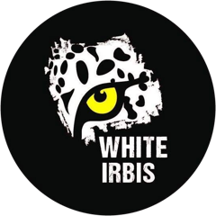<span class="sl"><span class="s1">Follow the</span><span class="s2">White <b>Irbis</b></span></span></a>
    <div class="right"><nav aria-label="Разделы">
      <a href="#program"><span lang="ru">Программа</span><span lang="en">Programme</span><span lang="hy">Ծրագիր</span></a>
      <a href="#places"><span lang="ru">Места</span><span lang="en">Places</span><span lang="hy">Վայրեր</span></a>
      <a href="#included"><span lang="ru">Что входит</span><span lang="en">What's included</span><span lang="hy">Ինչ է ներառված</span></a>
      <a href="#price"><span lang="ru">Цена</span><span lang="en">Price</span><span lang="hy">Գին</span></a>
    </nav><div class="lang" role="group" aria-label="Language"><button type="button" data-l="ru" aria-pressed="true">RU</button><button type="button" data-l="en" aria-pressed="false">EN</button><button type="button" data-l="hy" aria-pressed="false">ARM</button></div></div>
  </div>
</header>

<section class="hero" id="top">
  <div class="hero-photos" aria-hidden="true">
    
    <video class="hero-vid" src="vid/hero_climb.mp4" muted loop playsinline preload="metadata"></video>
  </div>
  <div class="wrap">
    <span class="alt"><span lang="ru">Армения · 7 дней · апрель — ноябрь</span><span lang="en">Armenia · 7 days · April — November</span><span lang="hy">Հայաստան · 7 օր · ապրիլ — նոյեմբեր</span></span>
    <h1><span lang="ru">Скалы</span><span lang="en">Rocks</span><span lang="hy">Ժայռեր</span><br><em><span lang="ru">и</span><span lang="en">and</span><span lang="hy">և</span></em> <span lang="ru">вулканы</span><span lang="en">volcanoes</span><span lang="hy">հրաբուխներ</span></h1>
    <p class="sub"><span lang="ru">Скалолазание в Нораванке и Адском ущелье, два треккинга и восхождение на Арагац. Опыт не нужен — научим с нуля.</span><span lang="en">Rock climbing at Noravank and Hell's Canyon, two treks and an ascent of Mount Aragats. No experience needed — we teach you from scratch.</span><span lang="hy">Ժայռամագլցում Նորավանքում և Դժոխքի կիրճում, երկու արշավ և վերելք Արագած։ Փորձ պետք չէ՝ կսովորեցնենք զրոյից։</span></p>
    <div class="hero-row">
      <a class="cta" href="#price"><span lang="ru">Хочу в горы</span><span lang="en">Take me to the mountains</span><span lang="hy">Ուզում եմ լեռներ</span></a>
      <span class="price-chip"><span lang="ru">99 000 ₽</span><span lang="en">€1,075</span><span lang="hy">435 000 ֏</span><small><span lang="ru">за человека, без перелёта</span><span lang="en">per person, flights not included</span><span lang="hy">մեկ անձի համար, առանց թռիչքի</span></small></span>
    </div>
  </div>
</section>

<section class="facts" aria-label="Коротко о туре">
  <div class="wrap">
    <dl>
      <div><dt><span lang="ru">Длительность</span><span lang="en">Duration</span><span lang="hy">Տևողություն</span></dt><dd><span lang="ru">7 дней</span><span lang="en">7 days</span><span lang="hy">7 օր</span><small><span lang="ru">6 ночей</span><span lang="en">6 nights</span><span lang="hy">6 գիշեր</span></small></dd></div>
      <div><dt><span lang="ru">Сезон</span><span lang="en">Season</span><span lang="hy">Սեզոն</span></dt><dd><span lang="ru">Апрель — ноябрь</span><span lang="en">April — November</span><span lang="hy">Ապրիլ — նոյեմբեր</span><small><span lang="ru">Арагац — июль–сентябрь</span><span lang="en">Aragats — July–September</span><span lang="hy">Արագած՝ հուլիս–սեպտեմբեր</span></small></dd></div>
      <div><dt><span lang="ru">Группа</span><span lang="en">Group</span><span lang="hy">Խումբ</span></dt><dd><span lang="ru">До 8 человек</span><span lang="en">Up to 8 people</span><span lang="hy">Մինչև 8 հոգի</span><small><span lang="ru">2 инструктора</span><span lang="en">2 instructors</span><span lang="hy">2 հրահանգիչ</span></small></dd></div>
      <div><dt><span lang="ru">Уровень</span><span lang="en">Level</span><span lang="hy">Մակարդակ</span></dt><dd><span lang="ru">С нуля</span><span lang="en">Beginner</span><span lang="hy">Սկսնակ</span><small><span lang="ru">опыт не нужен</span><span lang="en">no experience needed</span><span lang="hy">փորձ պետք չէ</span></small></dd></div>
      <div><dt><span lang="ru">Высшая точка</span><span lang="en">Highest point</span><span lang="hy">Ամենաբարձր կետ</span></dt><dd><span lang="ru">4 008 м</span><span lang="en">4,008 m</span><span lang="hy">4 008 մ</span><small><span lang="ru">Западная вершина Арагаца</span><span lang="en">West summit of Aragats</span><span lang="hy">Արագածի Արևմտյան գագաթ</span></small></dd></div>
    </dl>
  </div>
</section>

<section id="who">
  <div class="wrap">
    <span class="eyebrow"><span lang="ru">Для кого</span><span lang="en">Who it's for</span><span lang="hy">Ում համար է</span></span>
    <h2 class="h2"><span lang="ru">Опыт не нужен</span><span lang="en">No experience needed</span><span lang="hy">Փորձ պետք չէ</span></h2>
    <div class="who-grid">
      <div class="who"><h3><span lang="ru">Никогда не лазали</span><span lang="en">Never climbed before</span><span lang="hy">Երբեք չեք մագլցել</span></h3><p><span lang="ru">Инструктор научит страховке, узлам и работе с верёвкой прямо на скалах. Начинаем с простых маршрутов.</span><span lang="en">An instructor teaches belaying, knots and rope work right on the rock. We start with easy routes.</span><span lang="hy">Հրահանգիչը կսովորեցնի ապահովում, հանգույցներ և աշխատանք պարանով հենց ժայռերին։ Սկսում ենք հեշտ երթուղիներից։</span></p></div>
      <div class="who"><h3><span lang="ru">Лазаете в зале</span><span lang="en">You climb indoors</span><span lang="hy">Մագլցում եք դահլիճում</span></h3><p><span lang="ru">Первый выезд на настоящие скалы с инструктором: Нораванк, потом маршруты посложнее в Адском ущелье.</span><span lang="en">Your first trip to real rock with an instructor: Noravank, then harder routes in Hell's Canyon.</span><span lang="hy">Առաջին ելքը իսկական ժայռեր հրահանգչի հետ՝ Նորավանք, հետո ավելի բարդ երթուղիներ Դժոխքի կիրճում։</span></p></div>
      <div class="who dark"><h3><span lang="ru">Хотите вершину</span><span lang="en">You want a summit</span><span lang="hy">Ուզում եք գագաթ</span></h3><p><span lang="ru">Арагац без сложной альпинистской техники — Южная 3 879 м или Западная 4 008 м.</span><span lang="en">Aragats with no technical mountaineering — South summit 3,879 m or West 4,008 m.</span><span lang="hy">Արագած՝ առանց բարդ լեռնագնացական տեխնիկայի. Հարավային 3 879 մ կամ Արևմտյան 4 008 մ։</span></p></div>
    </div>
    <p class="note"><span lang="ru">Достаточно обычной физической формы. Лазаем рано утром и ближе к вечеру, в жару смотрим Армению.</span><span lang="en">Ordinary fitness is enough. We climb early in the morning and towards evening, and see Armenia in the heat of the day.</span><span lang="hy">Բավական է սովորական ֆիզիկական պատրաստվածությունը։ Մագլցում ենք վաղ առավոտյան և երեկոյան մոտ, իսկ շոգին տեսնում ենք Հայաստանը։</span></p>
  </div>
</section>

<section id="route" style="padding-top:0">
  <div class="wrap">
    <span class="eyebrow"><span lang="ru">Маршрут</span><span lang="en">Route</span><span lang="hy">Երթուղի</span></span>
    <h2 class="h2"><span lang="ru">Три точки за семь дней</span><span lang="en">Three places in seven days</span><span lang="hy">Երեք վայր յոթ օրում</span></h2>
    <div class="route">
      <ol class="legs">
        <li><b><span lang="ru">День 1</span><span lang="en">Day 1</span><span lang="hy">Օր 1</span></b><span><strong><span lang="ru">Ереван.</span><span lang="en">Yerevan.</span><span lang="hy">Երևան։</span></strong> <span lang="ru">Прилёт и свободный день, прогулка по городу по желанию.</span><span lang="en">Arrival and a free day, optional city walk.</span><span lang="hy">Ժամանում և ազատ օր, ցանկության դեպքում՝ զբոսանք քաղաքում։</span></span></li>
        <li><b><span lang="ru">Дни 2–5</span><span lang="en">Days 2–5</span><span lang="hy">Օր 2–5</span></b><span><strong><span lang="ru">Арени и Вайоц Дзор.</span><span lang="en">Areni and Vayots Dzor.</span><span lang="hy">Արենի և Վայոց Ձոր։</span></strong> <span lang="ru">Четыре дня на живых скалах: Нораванк, потом Адское ущелье. Живём в кемпинге или деревенском доме рядом со скалами.</span><span lang="en">Four days on real rock: Noravank, then Hell's Canyon. We stay at a campsite or a village house near the crags.</span><span lang="hy">Չորս օր իսկական ժայռերին՝ Նորավանք, հետո Դժոխքի կիրճ։ Ապրում ենք քեմփինգում կամ գյուղական տանը ժայռերի մոտ։</span></span></li>
        <li><b><span lang="ru">Дни 5–6</span><span lang="en">Days 5–6</span><span lang="hy">Օր 5–6</span></b><span><strong><span lang="ru">Арагац.</span><span lang="en">Aragats.</span><span lang="hy">Արագած։</span></strong> <span lang="ru">Крепость Амберд, ночь у озера Кари на 3 200 м, вершина, вечером — Ереван и прощальный ужин. В апреле–июне и октябре–ноябре — Аждаак, Димац, Атис или Аралер.</span><span lang="en">Amberd fortress, a night by Lake Kari at 3,200 m, the summit, then Yerevan and a farewell dinner. In April–June and October–November — Azhdahak, Dimats, Atis or Araler.</span><span lang="hy">Ամբերդ ամրոց, գիշեր Քարի լճի մոտ 3 200 մ բարձրության վրա, գագաթ, երեկոյան՝ Երևան և հրաժեշտի ընթրիք։ Ապրիլ–հունիս և հոկտեմբեր–նոյեմբեր ամիսներին՝ Աժդահակ, Դիմաց, Աթիս կամ Արալեր։</span></span></li>
        <li><b><span lang="ru">День 7</span><span lang="en">Day 7</span><span lang="hy">Օր 7</span></b><span><strong><span lang="ru">Вылет</span><span lang="en">Departure</span><span lang="hy">Մեկնում</span></strong> <span lang="ru">по времени рейса.</span><span lang="en">according to your flight.</span><span lang="hy">ըստ չվերթի ժամի։</span></span></li>
      </ol>
      <div class="route-vis">
        <figure class="route-map"><svg viewBox="0 0 600 470" role="img" aria-label="Схема маршрута: Ереван, Адское ущелье, Арени и Нораванк, затем Амберд, озеро Кари и вершина Арагаца">
  <g fill="none" stroke="#2C2B27" stroke-width="1.2">
    <ellipse cx="120" cy="92" rx="70" ry="52"/><ellipse cx="120" cy="92" rx="104" ry="80"/><ellipse cx="120" cy="92" rx="140" ry="110"/>
    <ellipse cx="505" cy="372" rx="60" ry="38"/><ellipse cx="505" cy="372" rx="92" ry="60"/>
  </g>
  <image href="img/logo.png" x="24" y="398" width="52" height="52"/>
  <text x="86" y="429" font-family="Oswald, Arial, sans-serif" font-size="15" letter-spacing="2" fill="#A8A497">WHITE IRBIS</text>
  <path d="M120 92 C135 112 150 135 165 158 S225 240 280 262" fill="none" stroke="#F7F4EC" stroke-width="3"/>
  <path d="M280 262 C320 280 350 300 385 318 S455 350 495 372" fill="none" stroke="#F7F4EC" stroke-width="3"/>
  <path d="M495 372 L528 346" fill="none" stroke="#F7F4EC" stroke-width="3" stroke-dasharray="6 6"/>
  <g font-family="Rubik, Arial, sans-serif">
    <path d="M120 70 L140 104 L100 104 Z" fill="#FAEB0F" stroke="#121212" stroke-width="2"/>
    <text x="150" y="80" fill="#F7F4EC" font-size="19" font-weight="600"><tspan lang="ru">Арагац</tspan><tspan lang="en">Aragats</tspan><tspan lang="hy">Արագած</tspan></text>
    <text x="150" y="100" fill="#A8A497" font-size="14"><tspan lang="ru">вершина 3 879 / 4 008 м</tspan><tspan lang="en">summit 3,879 / 4,008 m</tspan><tspan lang="hy">գագաթ 3 879 / 4 008 մ</tspan></text>
    <circle cx="140" cy="122" r="7" fill="#FAEB0F" stroke="#121212" stroke-width="2"/>
    <text x="60" y="127" fill="#D8D4C8" font-size="14"><tspan lang="ru">оз. Кари</tspan><tspan lang="en">Lake Kari</tspan><tspan lang="hy">Քարի լիճ</tspan></text>
    <circle cx="168" cy="162" r="7" fill="#FAEB0F" stroke="#121212" stroke-width="2"/>
    <text x="182" y="167" fill="#D8D4C8" font-size="14"><tspan lang="ru">Амберд</tspan><tspan lang="en">Amberd</tspan><tspan lang="hy">Ամբերդ</tspan></text>
    <circle cx="280" cy="262" r="12" fill="#FAEB0F" stroke="#121212" stroke-width="3"/>
    <text x="300" y="256" fill="#F7F4EC" font-size="21" font-weight="600"><tspan lang="ru">Ереван</tspan><tspan lang="en">Yerevan</tspan><tspan lang="hy">Երևան</tspan></text>
    <circle cx="390" cy="320" r="8" fill="#FAEB0F" stroke="#121212" stroke-width="2"/>
    <text x="404" y="312" fill="#F7F4EC" font-size="16" font-weight="600"><tspan lang="ru">Адское ущелье</tspan><tspan lang="en">Hell's Canyon</tspan><tspan lang="hy">Դժոխքի կիրճ</tspan></text>
    <circle cx="495" cy="372" r="11" fill="#FAEB0F" stroke="#121212" stroke-width="3"/>
    <text x="490" y="404" fill="#F7F4EC" font-size="19" font-weight="600" text-anchor="end"><tspan lang="ru">Арени</tspan><tspan lang="en">Areni</tspan><tspan lang="hy">Արենի</tspan></text>
    <circle cx="530" cy="344" r="7" fill="#FAEB0F" stroke="#121212" stroke-width="2"/>
    <text x="532" y="326" fill="#D8D4C8" font-size="14" text-anchor="middle"><tspan lang="ru">Нораванк</tspan><tspan lang="en">Noravank</tspan><tspan lang="hy">Նորավանք</tspan></text>
  </g>
  <g font-family="Oswald, Arial, sans-serif" font-size="14" font-weight="600" letter-spacing=".5">
    <rect x="192" y="196" width="78" height="24" rx="4" fill="#FAEB0F"/><text x="231" y="213" text-anchor="middle" fill="#121212"><tspan lang="ru">ДНИ 5–6</tspan><tspan lang="en">DAYS 5–6</tspan><tspan lang="hy">ՕՐ 5–6</tspan></text>
    <rect x="300" y="268" width="74" height="24" rx="4" fill="#33322E"/><text x="337" y="285" text-anchor="middle" fill="#F7F4EC"><tspan lang="ru">ДНИ 1, 7</tspan><tspan lang="en">DAYS 1, 7</tspan><tspan lang="hy">ՕՐ 1, 7</tspan></text>
    <rect x="404" y="326" width="58" height="24" rx="4" fill="#33322E"/><text x="433" y="343" text-anchor="middle" fill="#F7F4EC"><tspan lang="ru">ДЕНЬ 5</tspan><tspan lang="en">DAY 5</tspan><tspan lang="hy">ՕՐ 5</tspan></text>
    <rect x="512" y="386" width="72" height="24" rx="4" fill="#FAEB0F"/><text x="548" y="403" text-anchor="middle" fill="#121212"><tspan lang="ru">ДНИ 2–5</tspan><tspan lang="en">DAYS 2–5</tspan><tspan lang="hy">ՕՐ 2–5</tspan></text>
  </g>
  <text x="24" y="32" font-family="Oswald, Arial, sans-serif" font-size="15" letter-spacing="2" fill="#FAEB0F"><tspan lang="ru">СХЕМА МАРШРУТА</tspan><tspan lang="en">ROUTE MAP</tspan><tspan lang="hy">ԵՐԹՈՒՂՈՒ ՍԽԵՄԱ</tspan></text>
</svg></figure>
        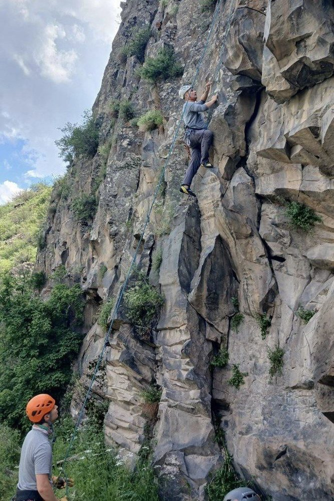
        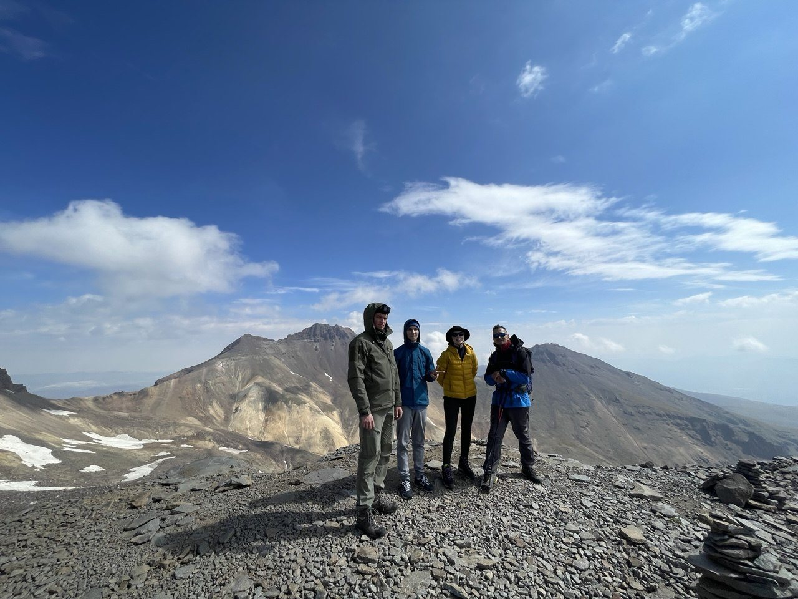
      </div>
    </div>
  </div>
</section>

<section class="prog" id="program">
  <div class="wrap">
    <span class="eyebrow"><span lang="ru">Программа</span><span lang="en">Programme</span><span lang="hy">Ծրագիր</span></span>
    <h2 class="h2"><span lang="ru">По дням</span><span lang="en">Day by day</span><span lang="hy">Ըստ օրերի</span></h2>
    <ol class="days">
      <li class="day">
        <figure><figcaption class="credit"><span lang="ru">Фото: Serouj Ourishian, CC BY-SA 3.0, Wikimedia Commons</span><span lang="en">Photo: Serouj Ourishian, CC BY-SA 3.0, Wikimedia Commons</span><span lang="hy">Լուսանկար՝ Serouj Ourishian, CC BY-SA 3.0, Wikimedia Commons</span></figcaption></figure>
        <div><div class="num">01</div><h3><span lang="ru">Прилёт в Ереван</span><span lang="en">Arrival in Yerevan</span><span lang="hy">Ժամանում Երևան</span></h3><p><span lang="ru">Свободный день: отдыхаем после перелёта. По желанию — прогулка по Еревану. Ночь в гестхаусе в центре.</span><span lang="en">A free day to rest after the flight. Optional walk around Yerevan. Night at a guesthouse in the centre.</span><span lang="hy">Ազատ օր՝ հանգիստ թռիչքից հետո։ Ցանկության դեպքում՝ զբոսանք Երևանում։ Գիշեր հյուրատանը կենտրոնում։</span></p><div class="tags"><span class="tag"><span lang="ru">Свободный день</span><span lang="en">Free day</span><span lang="hy">Ազատ օր</span></span><span class="tag"><span lang="ru">Прогулка по желанию</span><span lang="en">Optional walk</span><span lang="hy">Զբոսանք ըստ ցանկության</span></span><span class="tag"><span lang="ru">Гестхаус</span><span lang="en">Guesthouse</span><span lang="hy">Հյուրատուն</span></span></div></div>
      </li>
      <li class="day">
        <figure><span class="hv">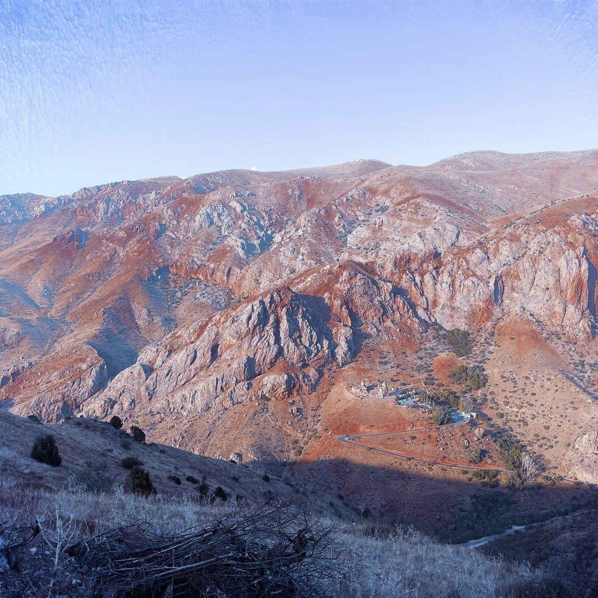<video src="vid/v01.mp4" muted loop playsinline preload="none" aria-hidden="true"></video><i class="hv-badge" aria-hidden="true"></i></span></figure>
        <div><div class="num">02</div><h3><span lang="ru">В Арени — и на скалы</span><span lang="en">To Areni and onto the rock</span><span lang="hy">Դեպի Արենի և ժայռեր</span></h3><p><span lang="ru">Утром переезд в Арени. Инструктаж: снаряжение, узлы, страховка. Вечером первые скалы Нораванка на простых маршрутах.</span><span lang="en">Morning transfer to Areni. Briefing: gear, knots, belaying. In the evening, the first easy routes at Noravank.</span><span lang="hy">Առավոտյան տեղափոխում Արենի։ Ճեպազրույց՝ հանդերձանք, հանգույցներ, ապահովում։ Երեկոյան՝ Նորավանքի առաջին հեշտ երթուղիները։</span></p><div class="tags"><span class="tag"><span lang="ru">Инструктаж</span><span lang="en">Briefing</span><span lang="hy">Ճեպազրույց</span></span><span class="tag"><span lang="ru">Нораванк</span><span lang="en">Noravank</span><span lang="hy">Նորավանք</span></span><span class="tag"><span lang="ru">Вайоц Дзор</span><span lang="en">Vayots Dzor</span><span lang="hy">Վայոց Ձոր</span></span></div></div>
      </li>
      <li class="day">
        <figure><span class="hv">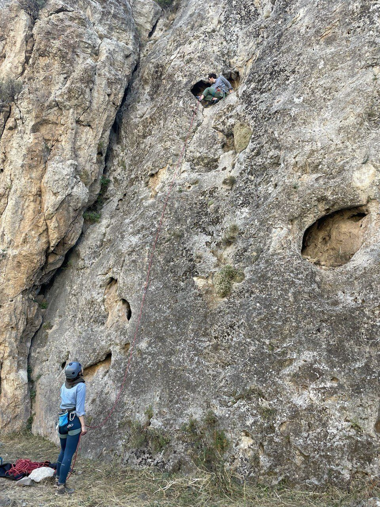<video src="vid/v04.mp4" muted loop playsinline preload="none" aria-hidden="true"></video><i class="hv-badge" aria-hidden="true"></i></span></figure>
        <div><div class="num">03</div><h3><span lang="ru">Нораванк и пещеры</span><span lang="en">Noravank and caves</span><span lang="hy">Նորավանք և քարանձավներ</span></h3><p><span lang="ru">Утром скалы. Днём — монастырь Нораванк, пещера Арени-1 и обед в пещере. Вечером снова скалы.</span><span lang="en">Climbing in the morning. Midday: Noravank monastery, the Areni-1 cave and lunch in a cave. Climbing again in the evening.</span><span lang="hy">Առավոտյան ժայռեր։ Կեսօրին՝ Նորավանք վանք, Արենի-1 քարանձավ և ճաշ քարանձավում։ Երեկոյան կրկին ժայռեր։</span></p><div class="tags"><span class="tag"><span lang="ru">Скалы</span><span lang="en">Rocks</span><span lang="hy">Ժայռեր</span></span><span class="tag"><span lang="ru">Арени-1</span><span lang="en">Areni-1</span><span lang="hy">Արենի-1</span></span><span class="tag"><span lang="ru">Обед в пещере</span><span lang="en">Lunch in a cave</span><span lang="hy">Ճաշ քարանձավում</span></span></div></div>
      </li>
      <li class="day">
        <figure>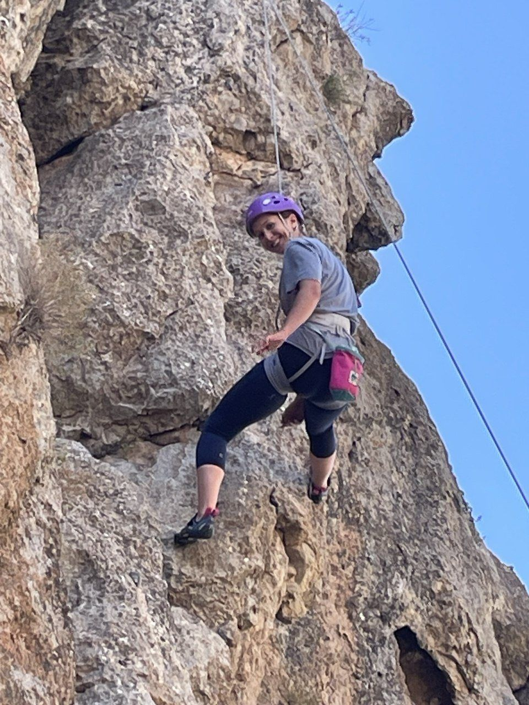</figure>
        <div><div class="num">04</div><h3><span lang="ru">Скалы, вино и тропа к Амагу</span><span lang="en">Rock, wine and the trail to Amaghu</span><span lang="hy">Ժայռեր, գինի և արահետ դեպի Ամաղու</span></h3><p><span lang="ru">Утром скалы, днём дегустация в Арени, вечером — тропа по ущелью к руинам Амагу.</span><span lang="en">Climbing in the morning, wine tasting in Areni at midday, and in the evening a gorge trail to the ruins of Amaghu.</span><span lang="hy">Առավոտյան ժայռեր, կեսօրին՝ համտես Արենիում, երեկոյան՝ արահետ կիրճով դեպի Ամաղուի ավերակներ։</span></p><div class="tags"><span class="tag"><span lang="ru">Дегустация</span><span lang="en">Wine tasting</span><span lang="hy">Գինու համտես</span></span><span class="tag"><span lang="ru">Транскавказская тропа</span><span lang="en">Transcaucasian Trail</span><span lang="hy">Անդրկովկասյան արահետ</span></span><span class="tag"><span lang="ru">Скалы</span><span lang="en">Rocks</span><span lang="hy">Ժայռեր</span></span></div></div>
      </li>
      <li class="day">
        <figure><span class="hv">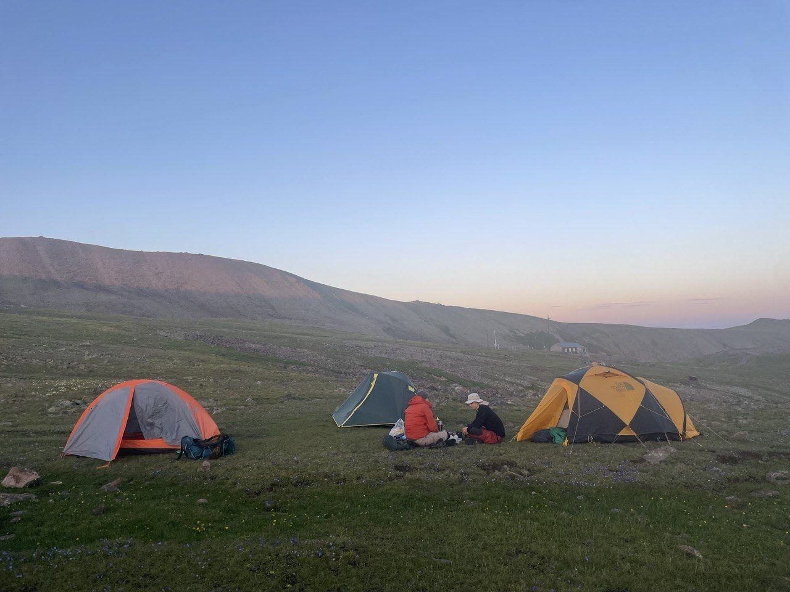<video src="vid/v08.mp4" muted loop playsinline preload="none" aria-hidden="true"></video><i class="hv-badge" aria-hidden="true"></i></span></figure>
        <div><div class="num">05</div><h3><span lang="ru">Адское ущелье и к Арагацу</span><span lang="en">Hell's Canyon and on to Aragats</span><span lang="hy">Դժոխքի կիրճ և դեպի Արագած</span></h3><p><span lang="ru">Утром скалы Адского ущелья. Днём переезд к Арагацу, по пути крепость Амберд. Ночь в палатках у озера Кари на 3 200 м.</span><span lang="en">Morning climbing in Hell's Canyon. Midday transfer to Aragats via Amberd fortress. Night in tents by Lake Kari at 3,200 m.</span><span lang="hy">Առավոտյան՝ Դժոխքի կիրճի ժայռեր։ Կեսօրին տեղափոխում Արագած, ճանապարհին՝ Ամբերդ ամրոց։ Գիշեր վրաններում Քարի լճի մոտ 3 200 մ բարձրության վրա։</span></p><div class="tags"><span class="tag"><span lang="ru">Адское ущелье</span><span lang="en">Hell's Canyon</span><span lang="hy">Դժոխքի կիրճ</span></span><span class="tag"><span lang="ru">Амберд</span><span lang="en">Amberd</span><span lang="hy">Ամբերդ</span></span><span class="tag"><span lang="ru">Палатки, 3 200 м</span><span lang="en">Tents, 3,200 m</span><span lang="hy">Վրաններ, 3 200 մ</span></span></div></div>
      </li>
    </ol>
    <figure class="summit"><span class="hv">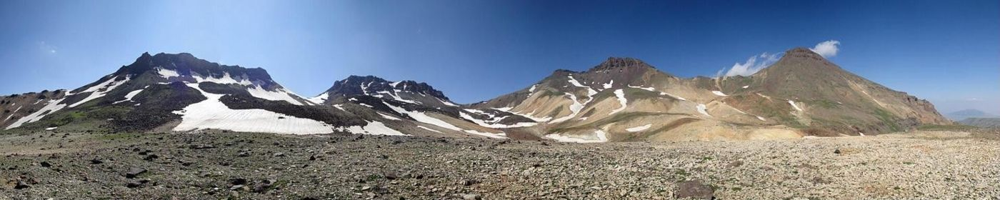<video src="vid/v09.mp4" muted loop playsinline preload="none" aria-hidden="true"></video><i class="hv-badge" aria-hidden="true"></i></span><figcaption class="credit"><span lang="ru">Вершины Арагаца из кратера. Фото: vahemart, CC BY-SA 3.0, Wikimedia Commons</span><span lang="en">The Aragats summits from the crater. Photo: vahemart, CC BY-SA 3.0, Wikimedia Commons</span><span lang="hy">Արագածի գագաթները խառնարանից։ Լուսանկար՝ vahemart, CC BY-SA 3.0, Wikimedia Commons</span></figcaption></figure>
    <div class="days-short">
      <div><span class="mark"><span lang="ru">День 6</span><span lang="en">Day 6</span><span lang="hy">Օր 6</span></span><h3><span lang="ru">Вершина и Ереван</span><span lang="en">Summit and Yerevan</span><span lang="hy">Գագաթ և Երևան</span></h3><p><span lang="ru">Восхождение на Южную (3 879 м) или Западную (4 008 м) вершину Арагаца, спуск и переезд в Ереван. Гостиница, душ, отдых и прощальный ужин всей группой.</span><span lang="en">Ascent of the South (3,879 m) or West (4,008 m) summit of Aragats, descent and transfer to Yerevan. Hotel, shower, rest and a farewell dinner with the whole group.</span><span lang="hy">Վերելք Արագածի Հարավային (3 879 մ) կամ Արևմտյան (4 008 մ) գագաթ, վայրէջք և տեղափոխում Երևան։ Հյուրանոց, ցնցուղ, հանգիստ և հրաժեշտի ընթրիք ամբողջ խմբով։</span></p></div>
      <div><span class="mark"><span lang="ru">День 7</span><span lang="en">Day 7</span><span lang="hy">Օր 7</span></span><h3><span lang="ru">Вылет</span><span lang="en">Departure</span><span lang="hy">Մեկնում</span></h3><p><span lang="ru">Вылет по времени вашего рейса. Если рейс поздний — свободное время в Ереване.</span><span lang="en">Departure according to your flight. If your flight is late, free time in Yerevan.</span><span lang="hy">Մեկնում՝ ըստ ձեր չվերթի։ Եթե չվերթը ուշ է՝ ազատ ժամանակ Երևանում։</span></p></div>
    </div>
    <div class="season"><span class="mark"><span lang="ru">Сезонность</span><span lang="en">Seasons</span><span lang="hy">Սեզոնայնություն</span></span><p><b><span lang="ru">Тур идёт с апреля по ноябрь, Арагац — с июля по сентябрь.</span><span lang="en">The tour runs from April to November; Aragats from July to September.</span><span lang="hy">Տուրը անցկացվում է ապրիլից նոյեմբեր, Արագածը՝ հուլիսից սեպտեմբեր։</span></b> <span lang="ru">В апреле–июне и октябре–ноябре вместо Арагаца идём на Аждаак, Димац, Атис или Аралер — выбираем по погоде и форме группы. Остальная программа не меняется.</span><span lang="en">In April–June and October–November we climb Azhdahak, Dimats, Atis or Araler instead of Aragats, chosen by weather and the group's fitness. The rest of the programme stays the same.</span><span lang="hy">Ապրիլ–հունիս և հոկտեմբեր–նոյեմբեր ամիսներին Արագածի փոխարեն բարձրանում ենք Աժդահակ, Դիմաց, Աթիս կամ Արալեր՝ ըստ եղանակի և խմբի պատրաստվածության։ Մնացած ծրագիրը չի փոխվում։</span></p></div>
    <p class="rule"><span lang="ru">Лазаем рано утром и ближе к вечеру, когда скалы в тени. Порядок дней может меняться по погоде.</span><span lang="en">We climb early in the morning and towards evening, when the rock is in shade. The order of days may change with the weather.</span><span lang="hy">Մագլցում ենք վաղ առավոտյան և երեկոյան մոտ, երբ ժայռերը ստվերում են։ Օրերի հերթականությունը կարող է փոխվել եղանակից կախված։</span></p>
  </div>
</section>

<section id="places">
  <div class="wrap">
    <span class="eyebrow"><span lang="ru">Места маршрута</span><span lang="en">Places on the route</span><span lang="hy">Երթուղու վայրերը</span></span>
    <h2 class="h2"><span lang="ru">Что увидите</span><span lang="en">What you'll see</span><span lang="hy">Ինչ կտեսնեք</span></h2>
    <div class="places">
      <article class="place">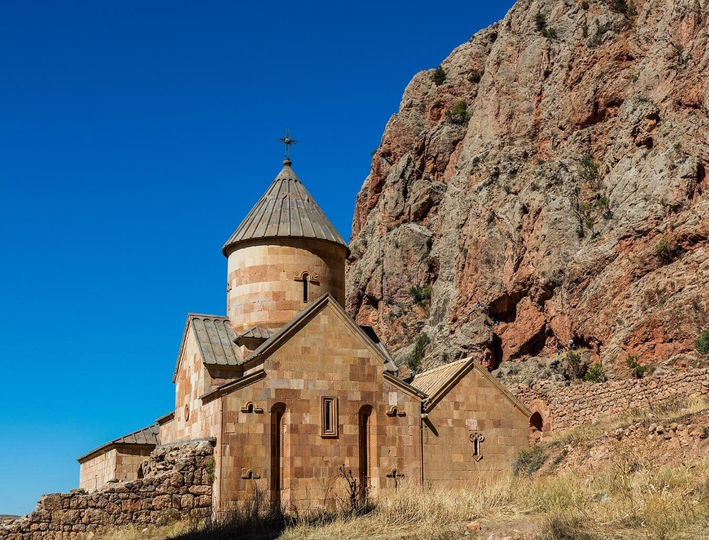<h3><span lang="ru">Монастырь Нораванк</span><span lang="en">Noravank Monastery</span><span lang="hy">Նորավանք վանք</span></h3><p><span lang="ru">Монастырь XIII века в ущелье Амагу, окружённый красными скалами. Одно из самых узнаваемых мест Армении — и наш первый скальный район.</span><span lang="en">A 13th-century monastery in the Amaghu gorge, surrounded by red cliffs. One of Armenia's most recognisable sights — and our first climbing area.</span><span lang="hy">XIII դարի վանք Ամաղուի կիրճում՝ շրջապատված կարմիր ժայռերով։ Հայաստանի ամենաճանաչելի վայրերից մեկը և մեր առաջին ժայռային շրջանը։</span></p><p class="fact"><b><span lang="ru">Факт:</span><span lang="en">Fact:</span><span lang="hy">Փաստ՝</span></b> <span lang="ru">скалы начинаются в нескольких минутах от монастыря.</span><span lang="en">the crags start a few minutes from the monastery.</span><span lang="hy">ժայռերը սկսվում են վանքից մի քանի րոպե հեռավորության վրա։</span></p><p class="credit"><span lang="ru">Фото: Diego Delso, CC BY-SA 4.0, Wikimedia Commons</span><span lang="en">Photo: Diego Delso, CC BY-SA 4.0, Wikimedia Commons</span><span lang="hy">Լուսանկար՝ Diego Delso, CC BY-SA 4.0, Wikimedia Commons</span></p></article>
      <article class="place">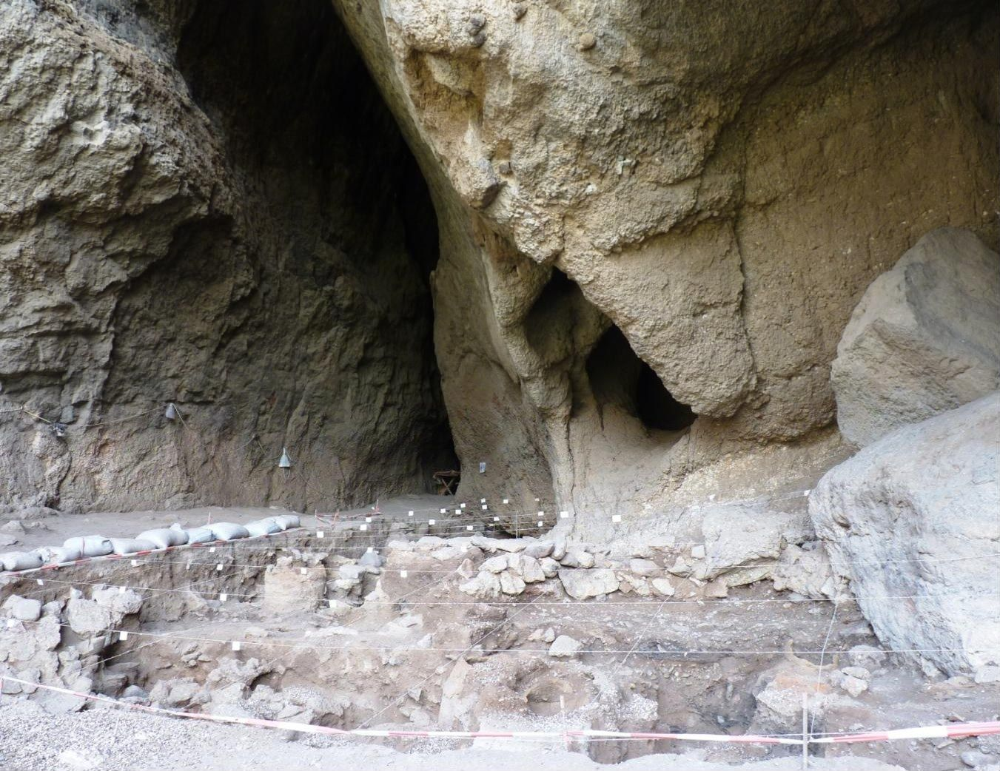<h3><span lang="ru">Пещера Арени-1</span><span lang="en">Areni-1 Cave</span><span lang="hy">Արենի-1 քարանձավ</span></h3><p><span lang="ru">Здесь археологи нашли древнейшую известную винодельню мира и древнейший кожаный башмак. Рядом село Арени — столица армянского вина.</span><span lang="en">Archaeologists found the world's oldest known winery and the oldest leather shoe here. Nearby is the village of Areni, the capital of Armenian wine.</span><span lang="hy">Այստեղ հնագետները գտել են աշխարհի ամենահին հայտնի գինեգործարանը և ամենահին կաշվե կոշիկը։ Մոտակայքում Արենի գյուղն է՝ հայկական գինու մայրաքաղաքը։</span></p><p class="fact"><b><span lang="ru">Факт:</span><span lang="en">Fact:</span><span lang="hy">Փաստ՝</span></b> <span lang="ru">вход входит в программу.</span><span lang="en">entry is included.</span><span lang="hy">մուտքը ներառված է ծրագրում։</span></p><p class="credit"><span lang="ru">Фото: Kiwiodysee, CC BY-SA 3.0, Wikimedia Commons</span><span lang="en">Photo: Kiwiodysee, CC BY-SA 3.0, Wikimedia Commons</span><span lang="hy">Լուսանկար՝ Kiwiodysee, CC BY-SA 3.0, Wikimedia Commons</span></p></article>
      <article class="place"><span class="hv">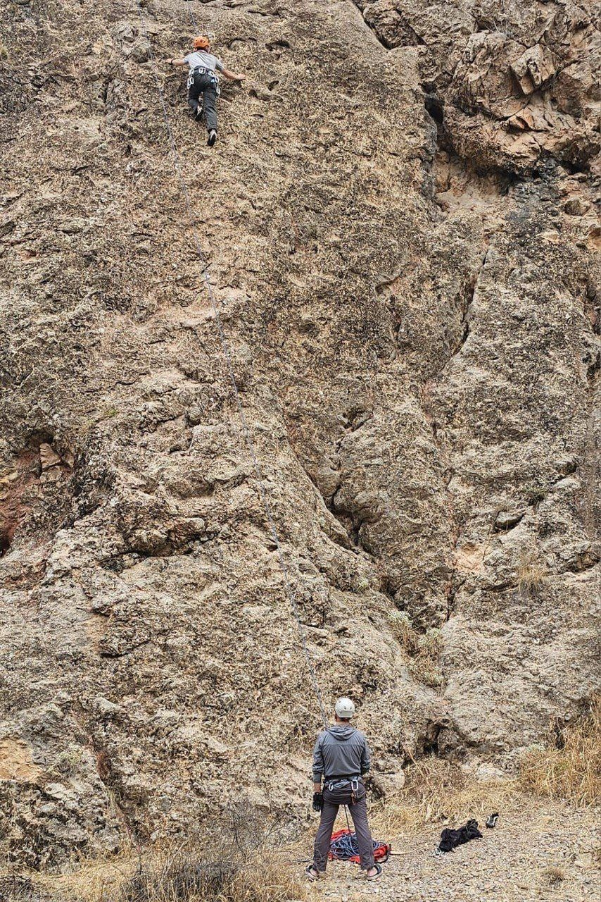<video src="vid/v02.mp4" muted loop playsinline preload="none" aria-hidden="true"></video><i class="hv-badge" aria-hidden="true"></i></span><h3><span lang="ru">Скалы Нораванка</span><span lang="en">Noravank crags</span><span lang="hy">Նորավանքի ժայռեր</span></h3><p><span lang="ru">Красные скалы ущелья Амагу — первые скалы тура. Простые маршруты для новичков, лазаем утром и вечером, когда скалы в тени.</span><span lang="en">The red cliffs of the Amaghu gorge are the tour's first crags. Easy routes for beginners; we climb in the morning and evening when the rock is in shade.</span><span lang="hy">Ամաղուի կիրճի կարմիր ժայռերը տուրի առաջին ժայռերն են։ Հեշտ երթուղիներ սկսնակների համար, մագլցում ենք առավոտյան և երեկոյան, երբ ժայռերը ստվերում են։</span></p></article>
      <article class="place"><span class="hv">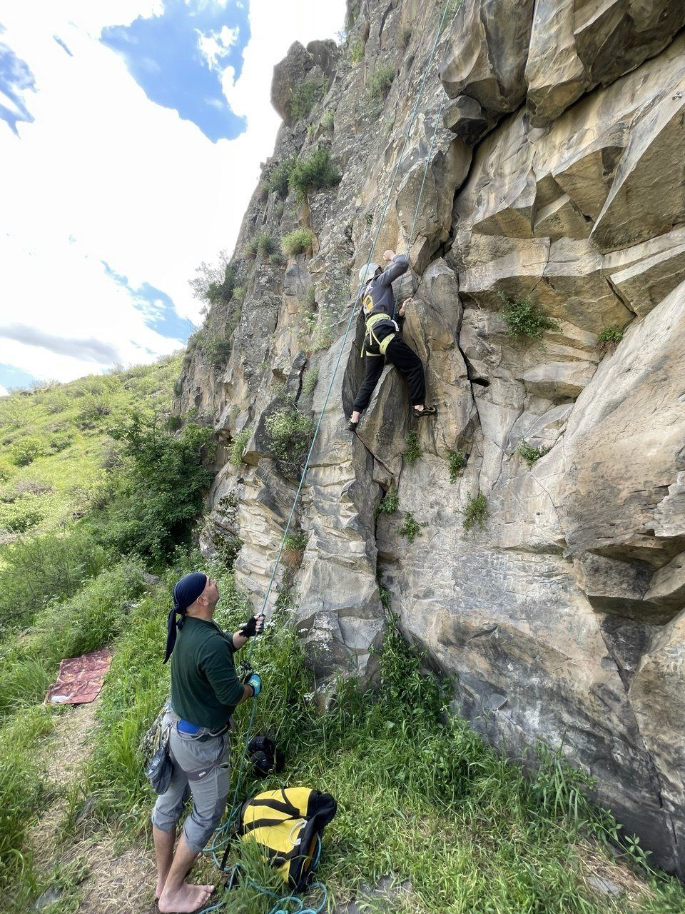<video src="vid/v13.mp4" muted loop playsinline preload="none" aria-hidden="true"></video><i class="hv-badge" aria-hidden="true"></i></span><h3><span lang="ru">Адское ущелье</span><span lang="en">Hell's Canyon</span><span lang="hy">Դժոխքի կիրճ</span></h3><p><span lang="ru">Узкое ущелье с ручьём, без толп. Сюда едем, когда группа освоилась: маршруты посложнее, работа с верёвкой.</span><span lang="en">A narrow gorge with a stream and no crowds. We come here once the group has settled in: harder routes and rope work.</span><span lang="hy">Նեղ կիրճ առվակով, առանց ամբոխի։ Այստեղ գալիս ենք, երբ խումբը արդեն վարժվել է՝ ավելի բարդ երթուղիներ, աշխատանք պարանով։</span></p><p class="fact"><b><span lang="ru">Факт:</span><span lang="en">Fact:</span><span lang="hy">Փաստ՝</span></b> <span lang="ru">~35 км от Арени, едем на нашем транспорте.</span><span lang="en">~35 km from Areni, in our own vehicles.</span><span lang="hy">Արենիից ~35 կմ, գնում ենք մեր տրանսպորտով։</span></p></article>
      <article class="place"><span class="hv">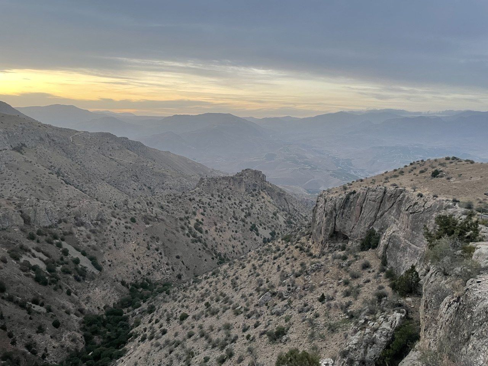<video src="vid/v06.mp4" muted loop playsinline preload="none" aria-hidden="true"></video><i class="hv-badge" aria-hidden="true"></i></span><span class="trail"><span lang="ru">Транскавказская тропа</span><span lang="en">Transcaucasian Trail</span><span lang="hy">Անդրկովկասյան արահետ</span></span><h3><span lang="ru">Тропа к руинам Амагу</span><span lang="en">Trail to the Amaghu ruins</span><span lang="hy">Արահետ դեպի Ամաղուի ավերակներ</span></h3><p><span lang="ru">Вечерняя прогулка по ущелью к руинам Амагу. Это участок Транскавказской тропы — пешего маршрута через Армению длиной 819 км, от озера Арпи до Мегри.</span><span lang="en">An evening walk through the gorge to the Amaghu ruins. It is a section of the Transcaucasian Trail, an 819 km hiking route across Armenia from Lake Arpi to Meghri.</span><span lang="hy">Երեկոյան զբոսանք կիրճով դեպի Ամաղուի ավերակներ։ Սա Անդրկովկասյան արահետի հատված է՝ 819 կմ երկարությամբ հետիոտն երթուղի Հայաստանով՝ Արփի լճից մինչև Մեղրի։</span></p></article>
      <article class="place"><span class="hv">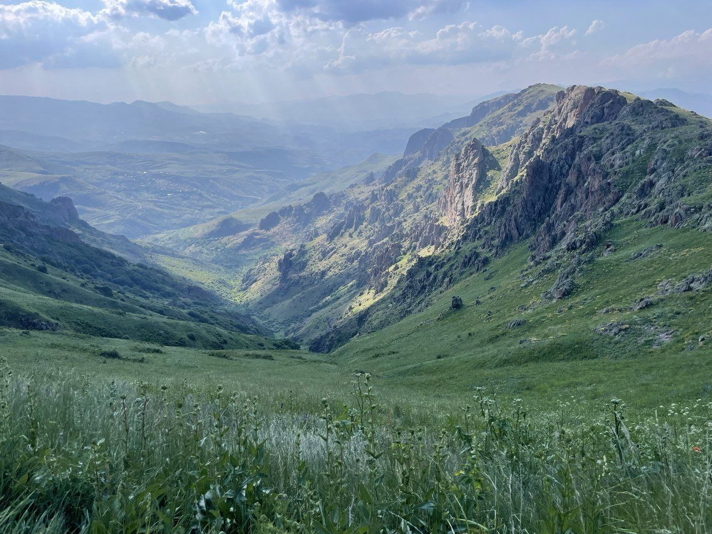<video src="vid/v12.mp4" muted loop playsinline preload="none" aria-hidden="true"></video><i class="hv-badge" aria-hidden="true"></i></span><span class="trail"><span lang="ru">Апрель–июнь, октябрь–ноябрь</span><span lang="en">April–June, October–November</span><span lang="hy">Ապրիլ–հունիս, հոկտեմբեր–նոյեմբեր</span></span><h3><span lang="ru">Вершины вне сезона</span><span lang="en">Off-season summits</span><span lang="hy">Գագաթներ սեզոնից դուրս</span></h3><p><span lang="ru">Арагац доступен с июля по сентябрь. В апреле–июне и октябре–ноябре вместо него восходим на Аждаак, Димац, Атис или Аралер — выбираем по погоде и форме группы.</span><span lang="en">Aragats is open from July to September. In April–June and October–November we climb Azhdahak, Dimats, Atis or Araler instead, chosen by weather and the group's fitness.</span><span lang="hy">Արագածը հասանելի է հուլիսից սեպտեմբեր։ Ապրիլ–հունիս և հոկտեմբեր–նոյեմբեր ամիսներին դրա փոխարեն բարձրանում ենք Աժդահակ, Դիմաց, Աթիս կամ Արալեր՝ ըստ եղանակի և խմբի պատրաստվածության։</span></p></article>
      <article class="place">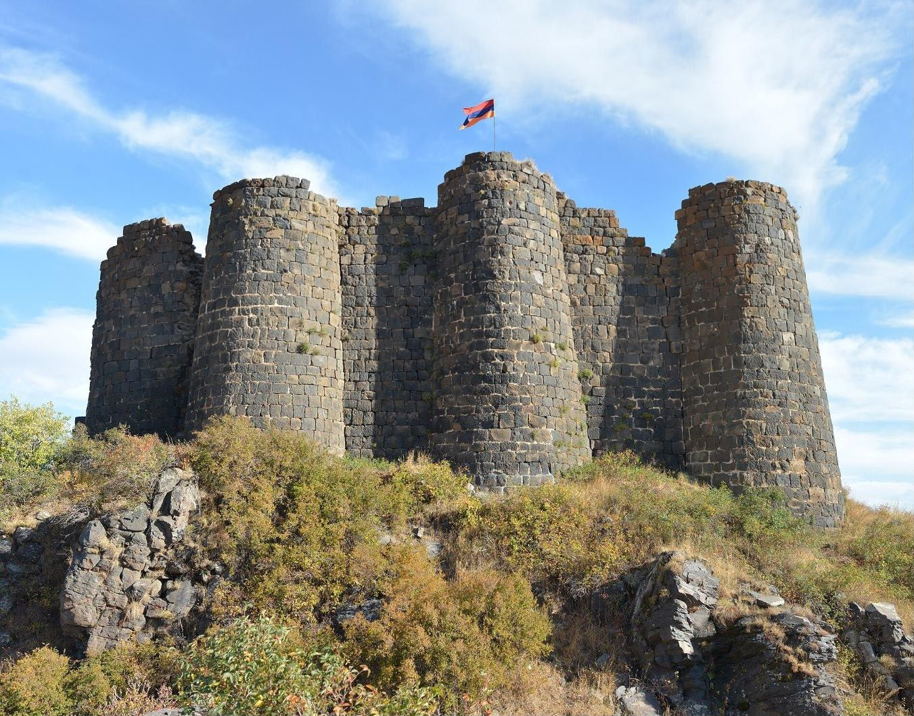<h3><span lang="ru">Крепость Амберд</span><span lang="en">Amberd Fortress</span><span lang="hy">Ամբերդ ամրոց</span></h3><p><span lang="ru">Средневековая крепость на склоне Арагаца — по пути к вершине.</span><span lang="en">A medieval fortress on the slopes of Aragats, on the way to the summit.</span><span lang="hy">Միջնադարյան ամրոց Արագածի լանջին՝ գագաթ տանող ճանապարհին։</span></p><p class="fact"><b><span lang="ru">Факт:</span><span lang="en">Fact:</span><span lang="hy">Փաստ՝</span></b> <span lang="ru">вход входит в программу.</span><span lang="en">entry is included.</span><span lang="hy">մուտքը ներառված է ծրագրում։</span></p><p class="credit"><span lang="ru">Фото: Thomas Wozniak, CC BY-SA 4.0, Wikimedia Commons</span><span lang="en">Photo: Thomas Wozniak, CC BY-SA 4.0, Wikimedia Commons</span><span lang="hy">Լուսանկար՝ Thomas Wozniak, CC BY-SA 4.0, Wikimedia Commons</span></p></article>
      <article class="place"><span class="hv">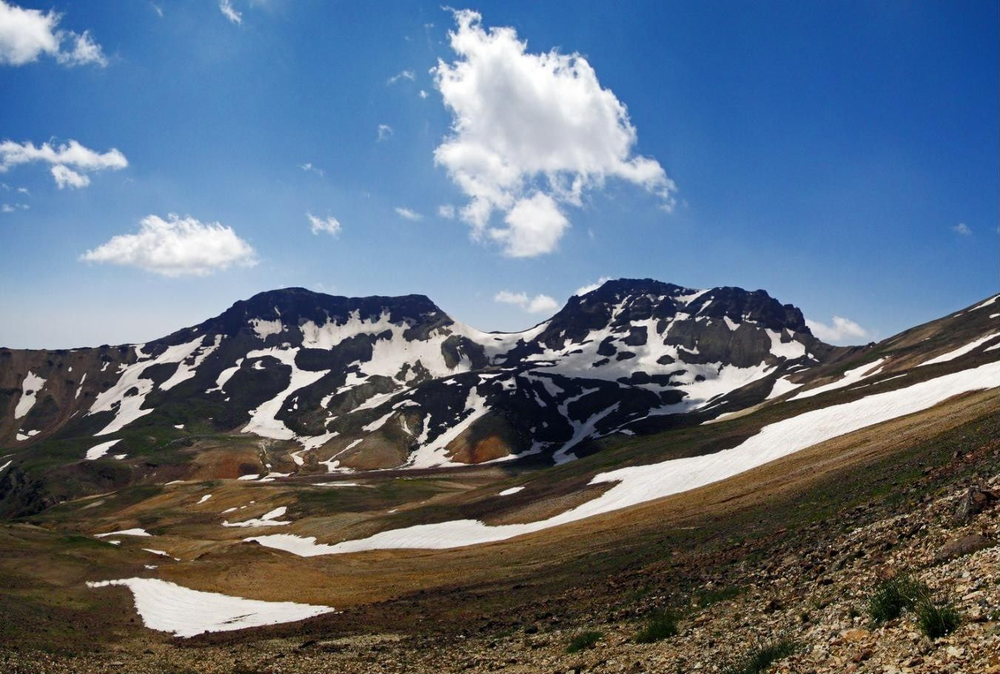<video src="vid/v05.mp4" muted loop playsinline preload="none" aria-hidden="true"></video><i class="hv-badge" aria-hidden="true"></i></span><h3><span lang="ru">Арагац и озеро Кари</span><span lang="en">Aragats and Lake Kari</span><span lang="hy">Արագած և Քարի լիճ</span></h3><p><span lang="ru">Потухший вулкан с кратером и четырьмя вершинами — самая высокая гора Армении. Лагерь у озера Кари на 3 200 м, восхождение на Южную (3 879 м) или Западную (4 008 м) вершину.</span><span lang="en">An extinct volcano with a crater and four summits — Armenia's highest mountain. Camp by Lake Kari at 3,200 m, then an ascent of the South (3,879 m) or West (4,008 m) summit.</span><span lang="hy">Հանգած հրաբուխ՝ խառնարանով և չորս գագաթով, Հայաստանի ամենաբարձր լեռը։ Ճամբար Քարի լճի մոտ 3 200 մ բարձրության վրա, վերելք Հարավային (3 879 մ) կամ Արևմտյան (4 008 մ) գագաթ։</span></p><p class="fact"><b><span lang="ru">Факт:</span><span lang="en">Fact:</span><span lang="hy">Փաստ՝</span></b> <span lang="ru">сезон — с июля по сентябрь.</span><span lang="en">season — July to September.</span><span lang="hy">սեզոնը՝ հուլիսից սեպտեմբեր։</span></p><p class="credit"><span lang="ru">Фото: vahemart, CC BY-SA 3.0, Wikimedia Commons</span><span lang="en">Photo: vahemart, CC BY-SA 3.0, Wikimedia Commons</span><span lang="hy">Լուսանկար՝ vahemart, CC BY-SA 3.0, Wikimedia Commons</span></p></article>
    </div>
  </div>
</section>

<section id="stay" style="padding-top:0">
  <div class="wrap">
    <span class="eyebrow"><span lang="ru">Где живём</span><span lang="en">Where we stay</span><span lang="hy">Որտեղ ենք ապրում</span></span>
    <h2 class="h2"><span lang="ru">Город, кемпинг, горы</span><span lang="en">City, campsite, mountains</span><span lang="hy">Քաղաք, քեմփինգ, լեռներ</span></h2>
    <div class="stay-list">
      <div class="night"><div class="n"><span lang="ru">Ночь 1</span><span lang="en">Night 1</span><span lang="hy">Գիշեր 1</span></div><h3><span lang="ru">Ереван</span><span lang="en">Yerevan</span><span lang="hy">Երևան</span></h3><p><span lang="ru">Гестхаус в центре города</span><span lang="en">Guesthouse in the city centre</span><span lang="hy">Հյուրատուն քաղաքի կենտրոնում</span></p></div>
      <div class="night hi"><div class="n"><span lang="ru">Ночи 2–4</span><span lang="en">Nights 2–4</span><span lang="hy">Գիշեր 2–4</span></div><h3><span lang="ru">Вайоц Дзор</span><span lang="en">Vayots Dzor</span><span lang="hy">Վայոց Ձոր</span></h3><p><span lang="ru">Кемпинг или деревенский дом недалеко от скал</span><span lang="en">Campsite or village house near the crags</span><span lang="hy">Քեմփինգ կամ գյուղական տուն ժայռերի մոտ</span></p></div>
      <div class="night"><div class="n"><span lang="ru">Ночь 5</span><span lang="en">Night 5</span><span lang="hy">Գիշեր 5</span></div><h3><span lang="ru">Озеро Кари</span><span lang="en">Lake Kari</span><span lang="hy">Քարի լիճ</span></h3><p><span lang="ru">Палатки на 3 200 м перед вершиной</span><span lang="en">Tents at 3,200 m before the summit</span><span lang="hy">Վրաններ 3 200 մ բարձրության վրա՝ գագաթից առաջ</span></p></div>
      <div class="night"><div class="n"><span lang="ru">Ночь 6</span><span lang="en">Night 6</span><span lang="hy">Գիշեր 6</span></div><h3><span lang="ru">Ереван</span><span lang="en">Yerevan</span><span lang="hy">Երևան</span></h3><p><span lang="ru">Гостиница после вершины: душ, отдых, прощальный ужин</span><span lang="en">Hotel after the summit: shower, rest, farewell dinner</span><span lang="hy">Հյուրանոց գագաթից հետո՝ ցնցուղ, հանգիստ, հրաժեշտի ընթրիք</span></p></div>
    </div>
    <div class="stay-photo">
      <figure><span class="hv"><video src="vid/camp.mp4" muted loop playsinline preload="none" aria-hidden="true"></video><i class="hv-badge" aria-hidden="true"></i></span></figure>
      <figure></figure>
    </div>
    <p class="note"><span lang="ru">Палатки и спальники даём мы. Свой спальник лучше взять, если он есть.</span><span lang="en">We provide tents and sleeping bags. If you have your own sleeping bag, bring it.</span><span lang="hy">Վրաններն ու քնապարկերը տրամադրում ենք մենք։ Եթե ունեք սեփական քնապարկ, ավելի լավ է վերցնել։</span></p>
  </div>
</section>

<section class="inc" id="included">
  <div class="wrap">
    <span class="eyebrow"><span lang="ru">Что входит и безопасность</span><span lang="en">What's included and safety</span><span lang="hy">Ինչ է ներառված և անվտանգություն</span></span>
    <h2 class="h2"><span lang="ru">Всё включено</span><span lang="en">Everything included</span><span lang="hy">Ամեն ինչ ներառված է</span></h2>
    <div class="inc-grid">
      <div>
        <h3><span lang="ru">Входит в цену</span><span lang="en">Included in the price</span><span lang="hy">Ներառված է գնի մեջ</span></h3>
        <ul>
          <li><span lang="ru">Два инструктора на группу до 8 человек</span><span lang="en">Two instructors per group of up to 8</span><span lang="hy">Երկու հրահանգիչ մինչև 8 հոգանոց խմբի համար</span></li>
          <li><span lang="ru">Инструктаж и обучение на скалах с нуля</span><span lang="en">Briefing and climbing instruction from scratch</span><span lang="hy">Ճեպազրույց և ուսուցում ժայռերին զրոյից</span></li>
          <li><span lang="ru">Транспорт по маршруту и трансферы к скалам</span><span lang="en">Transport along the route and transfers to the crags</span><span lang="hy">Տրանսպորտ ամբողջ երթուղով և տրանսֆերներ դեպի ժայռեր</span></li>
          <li><span lang="ru">Проживание: Ереван, кемпинг или деревенский дом, палатки — 6 ночей</span><span lang="en">Accommodation: Yerevan, campsite or village house, tents — 6 nights</span><span lang="hy">Կացություն՝ Երևան, քեմփինգ կամ գյուղական տուն, վրաններ՝ 6 գիշեր</span></li>
          <li><span lang="ru">Экскурсии, входные билеты, дегустация, тропа к Амагу</span><span lang="en">Excursions, entry tickets, wine tasting, the Amaghu trail</span><span lang="hy">Էքսկուրսիաներ, մուտքի տոմսեր, համտես, արահետ դեպի Ամաղու</span></li>
          <li><span lang="ru">Питание на маршруте, включая обед в пещере</span><span lang="en">Meals on the route, including lunch in a cave</span><span lang="hy">Սնունդ երթուղում, ներառյալ ճաշը քարանձավում</span></li>
          <li><span lang="ru">Всё снаряжение: верёвки, системы, каски, скальные туфли, палатки, спальники. Свои туфли и спальник желательны</span><span lang="en">All gear: ropes, harnesses, helmets, climbing shoes, tents, sleeping bags. Your own shoes and sleeping bag are recommended</span><span lang="hy">Ամբողջ հանդերձանքը՝ պարաններ, ամրագոտիներ, սաղավարտներ, ժայռամագլցման կոշիկներ, վրաններ, քնապարկեր։ Ցանկալի է ունենալ սեփական կոշիկներ և քնապարկ</span></li>
          <li><span lang="ru">Страховка каждого участника</span><span lang="en">Insurance for every participant</span><span lang="hy">Յուրաքանչյուր մասնակցի ապահովագրություն</span></li>
        </ul>
        <div class="no">
          <h3><span lang="ru">Не входит</span><span lang="en">Not included</span><span lang="hy">Ներառված չէ</span></h3>
          <ul>
            <li><span lang="ru">Перелёт до Еревана</span><span lang="en">Flights to Yerevan</span><span lang="hy">Թռիչք մինչև Երևան</span></li>
                        <li><span lang="ru">Ужины в Ереване</span><span lang="en">Dinners in Yerevan</span><span lang="hy">Ընթրիքներ Երևանում</span></li>
          </ul>
        </div>
      </div>
      <div>
        <h3><span lang="ru">Безопасность</span><span lang="en">Safety</span><span lang="hy">Անվտանգություն</span></h3>
        <ul>
          <li><span lang="ru">Опытные инструкторы на каждом выходе</span><span lang="en">Experienced instructors on every outing</span><span lang="hy">Փորձառու հրահանգիչներ յուրաքանչյուր ելքի ժամանակ</span></li>
          <li><span lang="ru">Страховка каждого участника — в цене</span><span lang="en">Insurance for every participant is included</span><span lang="hy">Յուրաքանչյուր մասնակցի ապահովագրությունը ներառված է</span></li>
          <li><span lang="ru">Проверенное снаряжение</span><span lang="en">Checked gear</span><span lang="hy">Ստուգված հանդերձանք</span></li>
          <li><span lang="ru">Связь на маршруте</span><span lang="en">Communication on the route</span><span lang="hy">Կապ երթուղում</span></li>
        </ul>
      </div>
      <figure><span class="hv">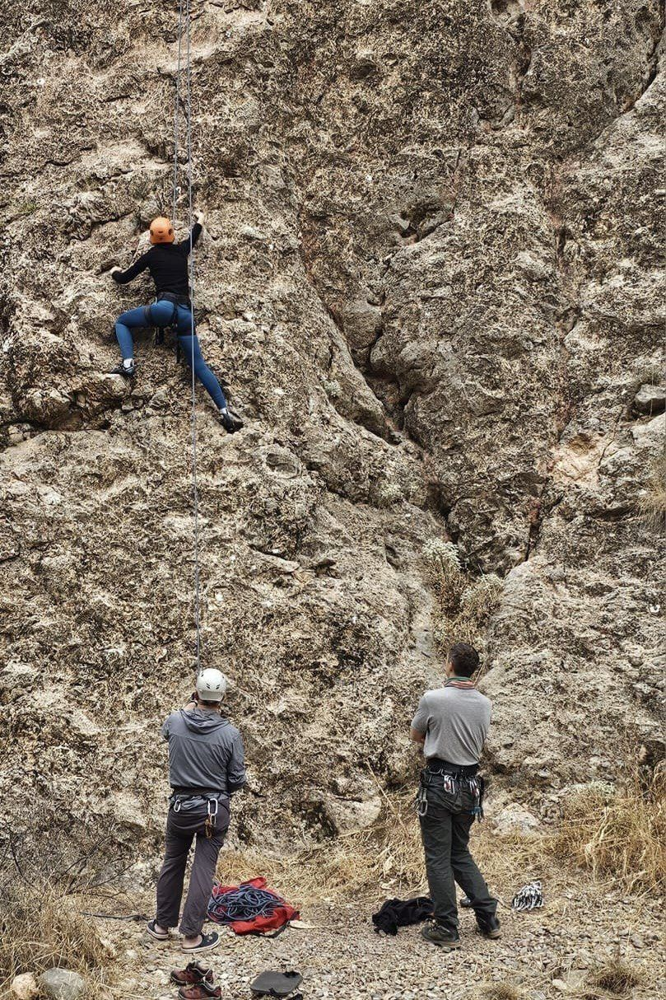<video src="vid/v15.mp4" muted loop playsinline preload="none" aria-hidden="true"></video><i class="hv-badge" aria-hidden="true"></i></span><figcaption class="credit"><span lang="ru">Инструктор на страховке</span><span lang="en">Instructor belaying</span><span lang="hy">Հրահանգիչը ապահովում է</span></figcaption></figure>
    </div>
  </div>
</section>

<section id="guides">
  <div class="wrap">
    <span class="eyebrow"><span lang="ru">Ваши гиды</span><span lang="en">Your guides</span><span lang="hy">Ձեր գիդերը</span></span>
    <h2 class="h2"><span lang="ru">С кем пойдёте</span><span lang="en">Who you'll climb with</span><span lang="hy">Ում հետ կգնաք</span></h2>
    <div class="guides">
      <div class="guide">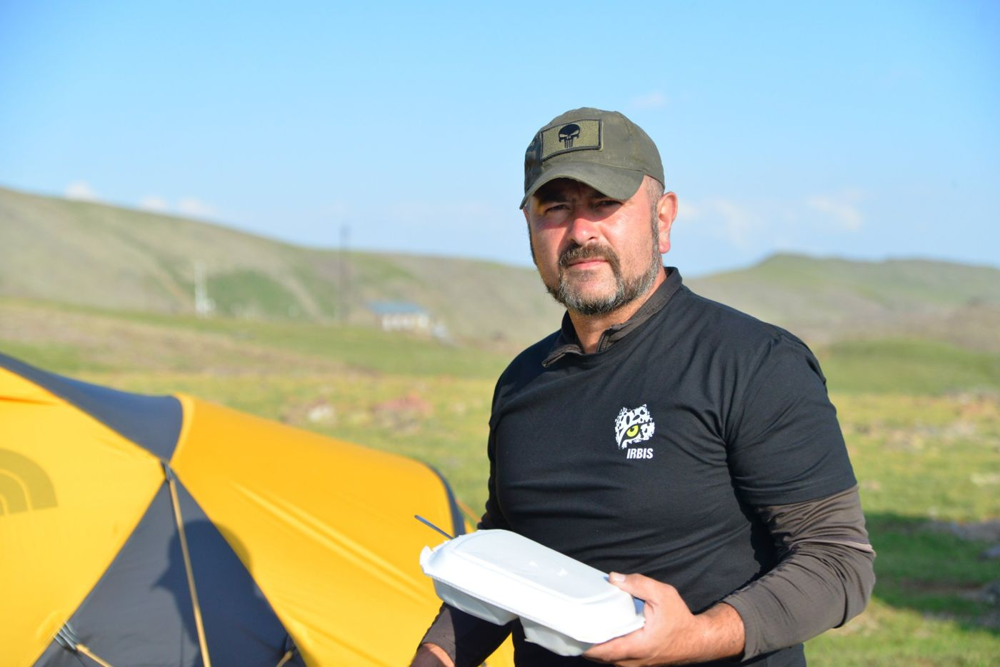<div><h3><span lang="ru">Антуан Ананян</span><span lang="en">Antoine Ananyan</span><span lang="hy">Անտուան Անանյան</span></h3><div class="role"><span lang="ru">Основатель White Irbis</span><span lang="en">Founder of White Irbis</span><span lang="hy">White Irbis-ի հիմնադիր</span></div><p><span lang="ru">Альпинист с международно признанным опытом восхождений: Кавказ, Альпы, Памир, Тянь-Шань, Гималаи. Вице-президент Федерации альпинизма Армении. Водит группы в горах Армении с 2003 года и знает их особенно хорошо.</span><span lang="en">A mountaineer with internationally recognised experience: the Caucasus, Alps, Pamirs, Tian Shan and Himalayas. Vice-president of the Mountaineering Federation of Armenia. Guiding groups in the mountains of Armenia since 2003, and knows them especially well.</span><span lang="hy">Միջազգայնորեն ճանաչված փորձով լեռնագնաց՝ Կովկաս, Ալպեր, Պամիր, Տյան-Շան, Հիմալայներ։ Հայաստանի լեռնագնացության ֆեդերացիայի փոխնախագահ։ Խմբեր է առաջնորդում Հայաստանի լեռներում 2003 թվականից և դրանք հատկապես լավ գիտի։</span></p></div></div>
      <div class="guide">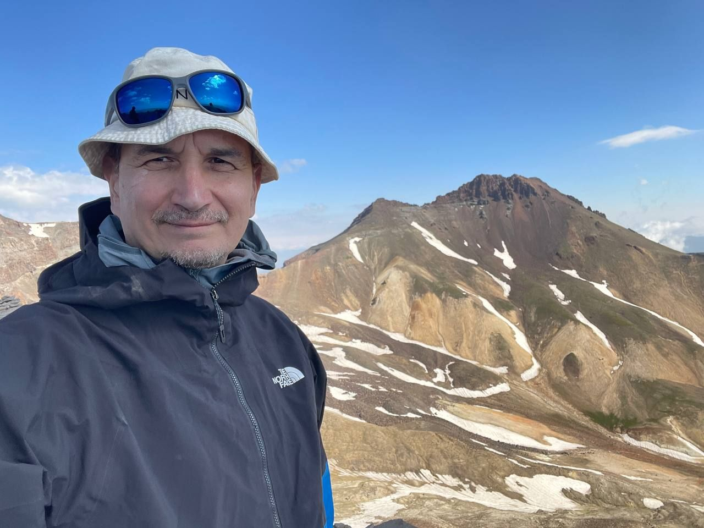<div><h3><span lang="ru">Алексей Цисельский</span><span lang="en">Alexey Tsiselsky</span><span lang="hy">Ալեքսեյ Ցիսելսկի</span></h3><div class="role"><span lang="ru">Партнёр White Irbis</span><span lang="en">Partner at White Irbis</span><span lang="hy">White Irbis-ի գործընկեր</span></div><p><span lang="ru">10 лет в альпинизме: Гималаи, Тянь-Шань, Кавказ, Альпы. 4 года в горах Армении.</span><span lang="en">10 years of mountaineering: Himalayas, Tian Shan, Caucasus, Alps. 4 years in the mountains of Armenia.</span><span lang="hy">10 տարի լեռնագնացության մեջ՝ Հիմալայներ, Տյան-Շան, Կովկաս, Ալպեր։ 4 տարի Հայաստանի լեռներում։</span></p></div></div>
    </div>
  </div>
</section>

<section class="faq" id="faq">
  <div class="wrap">
    <span class="eyebrow"><span lang="ru">Частые вопросы</span><span lang="en">FAQ</span><span lang="hy">Հաճախ տրվող հարցեր</span></span>
    <h2 class="h2"><span lang="ru">Перед поездкой</span><span lang="en">Before you go</span><span lang="hy">Մինչ ուղևորությունը</span></h2>
    <div class="faq-list">
      <details open><summary><span lang="ru">Я никогда не лазал. Подойдёт?</span><span lang="en">I've never climbed. Is it for me?</span><span lang="hy">Ես երբեք չեմ մագլցել։ Հարմար է՞</span></summary><p><span lang="ru">Да. Начинаем с инструктажа и простых маршрутов, инструктор всё время страхует.</span><span lang="en">Yes. We start with a briefing and easy routes, and an instructor belays you the whole time.</span><span lang="hy">Այո։ Սկսում ենք ճեպազրույցից և հեշտ երթուղիներից, հրահանգիչը ամբողջ ժամանակ ապահովում է։</span></p></details>
      <details><summary><span lang="ru">Какая нужна физическая форма?</span><span lang="en">How fit do I need to be?</span><span lang="hy">Ինչ ֆիզիկական պատրաստվածություն է պետք</span></summary><p><span lang="ru">Обычная: если вы спокойно гуляете по городу весь день, справитесь. Вершину выбираем по форме группы.</span><span lang="en">Ordinary: if you can walk around a city all day, you'll manage. We choose the summit to suit the group.</span><span lang="hy">Սովորական՝ եթե հանգիստ զբոսնում եք քաղաքում ամբողջ օրը, կհաղթահարեք։ Գագաթը ընտրում ենք ըստ խմբի պատրաստվածության։</span></p></details>
      <details><summary><span lang="ru">Обязательно идти на вершину?</span><span lang="en">Do I have to go to the summit?</span><span lang="hy">Պարտադիր է բարձրանալ գագաթ</span></summary><p><span lang="ru">Нет. Южная вершина (3 879 м) — самый доступный путь, Западная (4 008 м) — для тех, кто в хорошей форме.</span><span lang="en">No. The South summit (3,879 m) is the most accessible; the West (4,008 m) is for those in good shape.</span><span lang="hy">Ոչ։ Հարավային գագաթը (3 879 մ) ամենահասանելի ճանապարհն է, Արևմտյանը (4 008 մ)՝ լավ պատրաստվածություն ունեցողների համար։</span></p></details>
      <details><summary><span lang="ru">Когда можно поехать?</span><span lang="en">When can I go?</span><span lang="hy">Երբ կարելի է գնալ</span></summary><p><span lang="ru">С апреля по ноябрь — зимой на скалах холодно. Арагац доступен с июля по сентябрь, в апреле–июне и октябре–ноябре вместо него восходим на Аждаак, Димац, Атис или Аралер.</span><span lang="en">April to November — the rock is too cold in winter. Aragats is open July to September; in April–June and October–November we climb Azhdahak, Dimats, Atis or Araler instead.</span><span lang="hy">Ապրիլից նոյեմբեր՝ ձմռանը ժայռերին ցուրտ է։ Արագածը հասանելի է հուլիսից սեպտեմբեր, ապրիլ–հունիս և հոկտեմբեր–նոյեմբեր ամիսներին դրա փոխարեն բարձրանում ենք Աժդահակ, Դիմաց, Աթիս կամ Արալեր։</span></p></details>
      <details><summary><span lang="ru">Что брать с собой?</span><span lang="en">What should I bring?</span><span lang="hy">Ինչ վերցնել հետս</span></summary><p><span lang="ru">Пришлём список после бронирования. Всё снаряжение даём мы, включая скальные туфли и спальники. Но свои туфли и спальник лучше взять: в своём удобнее.</span><span lang="en">We'll send a list after booking. We provide all the gear, including climbing shoes and sleeping bags. Still, bring your own shoes and sleeping bag if you have them: your own fit better.</span><span lang="hy">Ցուցակը կուղարկենք ամրագրումից հետո։ Ամբողջ հանդերձանքը տրամադրում ենք մենք, այդ թվում ժայռամագլցման կոշիկներն ու քնապարկերը։ Բայց եթե ունեք սեփականը, ավելի լավ է վերցնել՝ սեփականով ավելի հարմար է։</span></p></details>
    </div>
  </div>
</section>

<section class="price" id="price">
  <div class="wrap">
    <div>
      <span class="eyebrow" style="color:var(--eye-ink)"><span lang="ru">Цена</span><span lang="en">Price</span><span lang="hy">Գին</span></span>
      <div class="big"><span lang="ru">99 000 ₽</span><span lang="en">€1,075</span><span lang="hy">435 000 ֏</span><small><span lang="ru">за человека</span><span lang="en">per person</span><span lang="hy">մեկ անձի համար</span><span class="fx" style="display:block;font-family:var(--body);font-size:16px;font-weight:500;letter-spacing:0;text-transform:none;opacity:.8;margin-top:8px"><span lang="ru">≈ 435 000 ֏ · ≈ €1 075</span><span lang="en">99,000 ₽ · ≈ 435,000 AMD</span><span lang="hy">99 000 ₽ · ≈ €1 075</span></span></small></div>
      <ul>
        <li><span lang="ru">Июль — сентябрь: с восхождением на Арагац</span><span lang="en">July — September: with the Aragats ascent</span><span lang="hy">Հուլիս — սեպտեմբեր՝ Արագածի վերելքով</span></li>
        <li><span lang="ru">Апрель — июнь, октябрь — ноябрь: Аждаак, Димац, Атис или Аралер</span><span lang="en">April — June, October — November: Azhdahak, Dimats, Atis or Araler</span><span lang="hy">Ապրիլ — հունիս, հոկտեմբեր — նոյեմբեր՝ Աժդահակ, Դիմաց, Աթիս կամ Արալեր</span></li>
        <li><span lang="ru">Группа до 8 человек, 2 инструктора</span><span lang="en">Group of up to 8, 2 instructors</span><span lang="hy">Խումբ մինչև 8 հոգի, 2 հրահանգիչ</span></li>
        <li><span lang="ru">7 дней, перелёт до Еревана — отдельно</span><span lang="en">7 days, flights to Yerevan not included</span><span lang="hy">7 օր, թռիչքը մինչև Երևան՝ առանձին</span></li>
      </ul>
    </div>
    <div class="contact">
      <h3><span lang="ru">Едем в горы?</span><span lang="en">Ready for the mountains?</span><span lang="hy">Գնո՞ւմ ենք լեռներ</span></h3>
      <p><span lang="ru">Напишите нам — пришлём даты, подберём заезд под ваш уровень и ответим на вопросы.</span><span lang="en">Message us — we'll send dates, find a departure that suits your level and answer your questions.</span><span lang="hy">Գրեք մեզ՝ կուղարկենք ամսաթվերը, կընտրենք ձեր մակարդակին համապատասխան խումբ և կպատասխանենք հարցերին։</span></p>
      <div class="msg"><a class="cta wa" href="https://wa.me/37491470331?text=%D0%97%D0%B4%D1%80%D0%B0%D0%B2%D1%81%D1%82%D0%B2%D1%83%D0%B9%D1%82%D0%B5!%20%D0%98%D0%BD%D1%82%D0%B5%D1%80%D0%B5%D1%81%D1%83%D0%B5%D1%82%20%D1%82%D1%83%D1%80%20%C2%AB%D0%A1%D0%BA%D0%B0%D0%BB%D1%8B%20%D0%B8%20%D0%B2%D1%83%D0%BB%D0%BA%D0%B0%D0%BD%C2%BB" target="_blank" rel="noopener"><svg viewBox="0 0 24 24" aria-hidden="true"><path fill="currentColor" d="M12 2.2a9.8 9.8 0 0 0-8.4 14.8L2.3 21.7l4.8-1.3A9.8 9.8 0 1 0 12 2.2Zm0 1.9a7.9 7.9 0 1 1-4.1 14.6l-.3-.2-2.8.8.8-2.7-.2-.3A7.9 7.9 0 0 1 12 4.1Zm-3 3.9c-.2 0-.6.1-.9.4-.3.3-1.1 1.1-1.1 2.6s1.1 3 1.3 3.2c.2.2 2.2 3.4 5.3 4.6 2.6 1 3.1.8 3.7.8.6-.1 1.8-.7 2-1.4.3-.7.3-1.3.2-1.4-.1-.1-.3-.2-.6-.4l-2-1c-.3-.1-.5-.1-.7.2l-.9 1.1c-.2.2-.3.2-.6.1-.3-.1-1.2-.5-2.3-1.4-.9-.8-1.4-1.7-1.6-2-.2-.3 0-.4.1-.6l.5-.5.3-.5c.1-.2 0-.4 0-.5l-.9-2.2c-.2-.6-.5-.5-.7-.5H9Z"/></svg><span>WhatsApp</span></a><a class="cta tg" href="https://t.me/+37491470331" target="_blank" rel="noopener"><svg viewBox="0 0 24 24" aria-hidden="true"><path fill="currentColor" d="M21.6 3.4 2.9 10.6c-1.2.5-1.2 1.2-.2 1.5l4.8 1.5 1.8 5.6c.2.6.4.8.8.8.4 0 .6-.2.9-.5l2.3-2.2 4.8 3.5c.9.5 1.5.2 1.7-.8l3.1-14.7c.3-1.3-.5-1.9-1.3-1.4ZM8.3 13.2l9.9-6.2c.5-.3.9-.1.5.2l-8.2 7.4-.3 3.4-1.9-4.8Z"/></svg><span>Telegram</span></a></div>
      <dl class="reqs">
        <div><dt><span lang="ru">Телефон, WhatsApp, Telegram</span><span lang="en">Phone, WhatsApp, Telegram</span><span lang="hy">Հեռախոս, WhatsApp, Telegram</span></dt><dd><a href="tel:+37491470331">+374 91 470 331</a></dd></div>
        <div><dt><span lang="ru">Почта</span><span lang="en">Email</span><span lang="hy">Էլ. փոստ</span></dt><dd><a href="mailto:antuanvisit@gmail.com">antuanvisit@gmail.com</a></dd></div>
      <div><dt><span lang="ru">Сайт</span><span lang="en">Website</span><span lang="hy">Կայք</span></dt><dd><a href="https://irbis.am" target="_blank" rel="noopener">irbis.am</a></dd></div>
      </dl>
    </div>
  </div>
</section>

<footer>
  <div class="wrap">
    <p><b>White Irbis</b> <span lang="ru">· горные программы в Армении · irbis.am ·</span><span lang="en">· mountain programmes in Armenia · irbis.am ·</span><span lang="hy">· լեռնային ծրագրեր Հայաստանում · irbis.am ·</span> <a href="tel:+37491470331">+374 91 470 331</a> (WhatsApp, Telegram) · antuanvisit@gmail.com</p>
    <p><span lang="ru">Ещё у нас: </span><span lang="en">Also from us: </span><span lang="hy">Նաև մեզ մոտ՝ </span><a href="../trekking/"><span lang="ru">Армения пешком — 7 дней треккинга</span><span lang="en">Armenia on Foot — a 7-day trek</span><span lang="hy">Հայաստան ոտքով — 7 օրվա արշավ</span></a></p>
    <p><span lang="ru">Фото Wikimedia Commons использованы по лицензиям CC BY и CC BY-SA, авторы указаны под снимками. Остальные фото — архив White Irbis.</span><span lang="en">Wikimedia Commons photos are used under CC BY and CC BY-SA licences; authors are credited under each image. All other photos are from the White Irbis archive.</span><span lang="hy">Wikimedia Commons-ի լուսանկարներն օգտագործված են CC BY և CC BY-SA լիցենզիաներով, հեղինակները նշված են լուսանկարների տակ։ Մնացած լուսանկարները White Irbis-ի արխիվից են։</span></p>
  </div>
</footer>

<script>
(function(){
  var items=[].slice.call(document.querySelectorAll('.hv'));
  function play(el){var v=el.querySelector('video');if(!v)return;var p=v.play();if(p&&p.catch)p.catch(function(){});el.classList.add('on');}
  function stop(el){var v=el.querySelector('video');if(!v)return;v.pause();el.classList.remove('on');}
  var canHover=window.matchMedia&&window.matchMedia('(hover:hover)').matches;
  var reduce=window.matchMedia&&window.matchMedia('(prefers-reduced-motion: reduce)').matches;
  items.forEach(function(el){
    el.addEventListener('mouseenter',function(){play(el)});
    el.addEventListener('mouseleave',function(){stop(el)});
    el.addEventListener('click',function(){el.classList.contains('on')?stop(el):play(el)});
  });
  if(!canHover&&!reduce&&'IntersectionObserver' in window){
    var io=new IntersectionObserver(function(es){es.forEach(function(e){e.intersectionRatio>0.6?play(e.target):stop(e.target)})},{threshold:[0,0.6]});
    items.forEach(function(el){io.observe(el)});
  }
})();
</script>
<script>
(function(){
  var h=document.querySelector('.hero'),v=h&&h.querySelector('.hero-vid'),ph=h&&h.querySelector('.hero-photos');if(!v)return;
  function on(){var p=v.play();if(p&&p.catch)p.catch(function(){});h.classList.add('on')}
  function off(){v.pause();h.classList.remove("on");setTimeout(function(){if(!h.classList.contains("on"))v.currentTime=0},650)}
  var hover=window.matchMedia('(hover:hover)').matches,reduce=window.matchMedia('(prefers-reduced-motion: reduce)').matches;
  if(hover){
    h.addEventListener('mousemove',function(e){var r=ph.getBoundingClientRect();(e.clientX>=r.left)?(h.classList.contains('on')||on()):(h.classList.contains('on')&&off())});
    h.addEventListener('mouseleave',off);
  } else if(!reduce){ setTimeout(on,2500); }
})();
</script>

<script>
(function(){var h=document.documentElement,b=[].slice.call(document.querySelectorAll('.lang button'));
var t={ru:'Скалы и вулканы — White Irbis',en:'Rocks and Volcanoes — White Irbis',hy:'Ժայռեր և հրաբուխներ — White Irbis'};
var m={ru:'Здравствуйте! Интересует тур «Скалы и вулканы»',en:'Hello! I am interested in the "Rocks and Volcanoes" tour',hy:'Բարև Ձեզ։ Հետաքրքրում է «Ժայռեր և հրաբուխներ» տուրը'};
function set(l){h.lang=l;b.forEach(function(x){x.setAttribute('aria-pressed',x.dataset.l===l)});document.title=t[l];
[].slice.call(document.querySelectorAll('a[href^="https://wa.me/37491470331"]')).forEach(function(a){a.href='https://wa.me/37491470331?text='+encodeURIComponent(m[l])});
try{localStorage.setItem('wi-lang',l)}catch(e){}}
var q=(location.search.match(/lang=(ru|en|hy)/)||[])[1],s=null;try{s=localStorage.getItem('wi-lang')}catch(e){}
set(q||(['ru','en','hy'].indexOf(s)>=0?s:'ru'));b.forEach(function(x){x.addEventListener('click',function(){set(x.dataset.l)})});})();
</script>